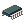
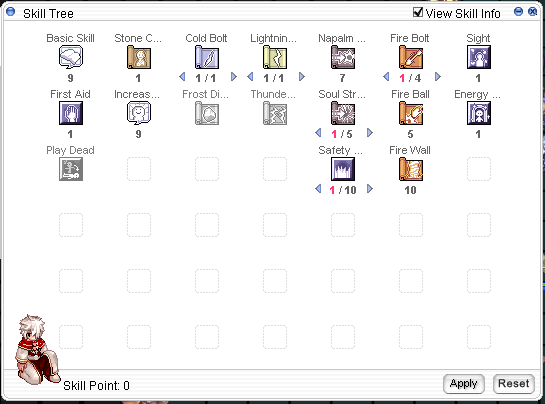

Ara's Sorcerer Guide
| Sorcerer | |||||||||||||||||||
|---|---|---|---|---|---|---|---|---|---|---|---|---|---|---|---|---|---|---|---|
| Job Base: | Mage/Sage/Scholar | ||||||||||||||||||
| Written By: | Ara | ||||||||||||||||||
| |||||||||||||||||||
Notice
Hello, I will no longer be updating this guide.
Overview
Hi, I'm Ara, and welcome to my Sorcerer guide. :> I've been playing Sorcerer for a while, and I thought I'd share some stuff I've learned, lol. My discord is Ara#6193 if you have any questions, or if you think I missed something/got something wrong. Thank you!
Sorcerers excel at inflicting and boosting elemental (Fire, Earth, Water, and Wind) damage, as well as supporting allies with their various buffs. They're also a nice source of Vitamin C SP, with Health Conversion and Soul Change. As long as you keep a sorc healed up (and they have at least 5 SP), your party should never be running out of SP.
Stats
I've listed some of the more important things that each of the 6 stats increase. Keep in mind that TOTAL stats means the total of base stats + bonuses.
STR - Recommended: 1-60.
Used mostly to increase carrying capacity. As a Sorcerer, you'll be carrying a lot of materials, be it Gemstones, Potions, or Cool Rocks That You Use To Summon Things. Only base STR will increase carrying capacity, bonus STR from buffs and equipment will not.
AGI - Recommended: Varies.
Increases ASPD and FLEE. Since many Sorcerer spells have hard cooldowns (not reduced by ACD), ASPD isn't too useful for us UNLESS you're playing a fleetank (tank hits by dodging them with FLEE) or a Spellfist build. 100 total AGI will make you immune to Sleep.
VIT - Recommended: 100+ Total
Increases MaxHP and DEF. Although Sorcerers's base HP is one of the worst, having a bit more HP will allow you to not die when sacrificing your own HP in Health Conversion. Remember that Sorcerer is mainly a support class, and you need to be alive to support your party members! 100 Total VIT will make you immune to Stun.
INT - Recommended: 120
Increases MATK, MDEF, and maxSP. Many Sorcerer spells also use INT directly in its damage calculation, so having as much INT as you can is a good idea. Soul Change also gives your target SP equal to half of your current SP, so higher maxSP will let you give more SP to allies. INT also reduces variable cast time by a little bit. 100 total INT will make you immune to Silence and Blind.
DEX - Recommended: 1 or 120, depending on your build.
Reduces variable cast time. Keep in mind that you need (DEX * 2) + INT = 530 to achieve 0 variable cast time. If you plan on using
 Temporal Boots of Dexterity [1], you will need at least 120 DEX. If you plan on using
Temporal Boots of Dexterity [1], you will need at least 120 DEX. If you plan on using  Illusion Leg B-Type [1] AND plan on reaching fast casting via stacking VCT% on your gears, you may take 1 base DEX.
Illusion Leg B-Type [1] AND plan on reaching fast casting via stacking VCT% on your gears, you may take 1 base DEX.LUK - Recommended: 1-60.
Increases.... many things. Notable for us is that it increases MATK (though not as much as INT) and Perfect Dodge. LUK gives resistances to many statuses (such as Stone Curse and Frozen) but does not make you immune to them at 100 total LUK. 100 total LUK will, however, make you immune to Curse. 0 total LUK (from -LUK from Essence of Evil VIT 3) will also make you immune to Curse. But I mostly suggest you can carry Panacea or Holy Water if you really don't want to be cursed.
Skills
Mage Skills
| Skill | Effect | Notes |
|---|---|---|
 Increase SP Recovery Increase SP Recovery
|
Increases natural SP recovery and SP recovery from consumables.
Max level: 10 |
Exactly what the skill name is: Increases SP Recovery. If you don't have anything to do with your points, throwing them in here isn't a bad choice. Not only does it improve your natural SP recovery, it makes your SP pots better, so you technically save money. |
 Sight Sight
|
Reveals hidden units around you.
Max Level: 1 |
Useful for revealing hidden units around you! |
 Napalm Beat Napalm Beat
|
Inflict Ghost Property damage to a target.
Max level: 10 |
I pretty much only have this because it's a prereq for Safety Wall. |
 Safety Wall Safety Wall
|
Consume 1 Blue Gemstone to place a barrier on the ground. Standing in the barrier will block melee hits until the duration runs out, you take a certain amount of hits, or a hit exceeds the Safety Wall's HP.
Max level: 10 |
Higher levels will block more hits and last longer. Note that if the melee hit is like, super strong, it can break the safety wall in a single hit. On the other hand, very fast, weak hits can also shred a safety wall. |
 Soul Strike Soul Strike
|
Inflicts Ghost Property damage to a target. Does extra damage to Undead race enemies.
Max level: 10 |
If you're leveling on Undead Monsters, you can consider using this skill, but I only take it as the prerequisite for Safety Wall. I prefer using Fireball, which does damage in an area, when I fight Undead monsters to level, since a lot of them tend to be both Undead Race and Element. |
 Cold Bolt Cold Bolt
|
Inflict Water Property damage to a target.
Max level: 10 |
Cold Bolt is a good choice to use with Spellfist, because Aqua's bonus MATK is more useful than Agni's bonus ATK when summoned. |
 Frost Diver Frost Diver
|
Inflict Water Property damage to a target, and has a chance to freeze the target.
Max level: 10 |
I don't really use this, but I've seen some people use it in BG to apply Frozen to people. Also something easy to target in BG if you want to replace a Shadow Chaser's FSK with something easy to hit after you dispel them (also in BG). |
 Stone Curse Stone Curse
|
Consume 1 Red Gemstone to attempt to inflict Stone Curse on a target.
Max level: 10 |
At level 6+, failing the cast no longer consumes the gemstone. Keep in mind that the cast range for this skill is incredibly small. Like, melee range. |
| Fire Ball | Inflict Fire Property damage to a target and enemies surrounding the target. Enemies damaged by the splash will take 3/4ths the damage inflicted.
Max level: 10 |
My go-to skill for leveling to 85. You'll want to group monsters together to use this efficiently. |
 Fire Wall Fire Wall
|
Place a Wall of Fire on the ground. Enemies that walk into the cells will be knocked back and take Fire Property damage. Each cell of Fire Wall will break after a certain amount of hits. Undead Enemies will not be knocked back, but will take the max amount of hits per cell and break each cell immediately into walking into it.
Max level: 10 |
Alright I'm gonna be real, I suck at using this spell. But it's really good for leveling, keeps stuff away from you, and does a lot of damage to Undead stuff since they don't get knocked back, they just take all the damage head-on like a champ. |
 Fire Bolt Fire Bolt
|
Inflict Fire Property damage to a target.
Max level: 10 |
Use this before you get Fire Ball since you'll probably be in Payon Dungeon killing Zombies/Skeletons.
Tip: You can select the skill with your hotkey, and then scroll up and down to change the level you're casting this as. So you can calculate exactly what level you need to oneshot Zombies to save SP. You can also max this if you're playing a Spellfist build vs Undead or Earth element enemies. |
 Lightning Bolt Lightning Bolt
|
Inflict Wind Property damage to a target.
Max level: 10 |
For Spellfist builds, or if you're leveling by killing Water element mobs before you become a Sorcerer. |
 Thunderstorm Thunderstorm
|
Inflict Wind Property Damage to an area
Max level: 10 |
I've literally never even seen this spell outside of some GMT mobs casting it. |
 Energy Coat Energy Coat
|
Reduce damage taken at the cost of losing SP every time you are hit.
Max level: 1 |
Even vs attacks that do "non-reducible damage," Energy Coat will reduce it. If you wanna be tankier at the cost of some SP drain, make sure to keep Energy Coat on. Keep in mind that it takes some of your SP every hit you take, so someone hitting you at 193 ASPD will shred your SP. At 0 SP, the next hit you take will cancel Energy Coat. The reduced damage depends on your current %SP, higher = more reduction.
Also, this is a Platinum Skill so it doesn't cost you points. Talk to the Platinum Skill NPC in the Main Office, Basement, if you are missing this skill. |
Second Job/Transcended Skills
| Skill | Effect | Notes |
|---|---|---|
 Advanced Book Advanced Book
|
Increases ASPD and ATK when equipped with a Book weapon.
Max Level: 10 |
For Spellfist builds, take level 10 for the 5% ASPD. The ATK is pretty whatever. Too bad it's not MATK. |
 Sense Sense
|
Analyze an enemy, bringing up the monster's information up for your entire party.
Max Level: 1 |
Useful to see monster's stats. In MH2, you can see a monster's remaining HP%. |
 Cast Cancel Cast Cancel
|
Cancels a spell before casting is complete, and refunds a portion of the SP.
Max Level: 5 |
Nice when you're leveling, in case you want to stop a long cast, but usually unnecessary later on since everything is gonna be too fast for you to cancel anyway. |
 Magic Rod Magic Rod
|
Absorb a targetted magic spell cast on you and recover SP when successfully absorbed. Lose SP if the absorbed spell is Spellbreaker.
Max Level: 5 |
Lets you dodge single target magic for a short duration. If you time it well, you can dodge spells such as Fenrir's Tetra Vortex with this skill. Lower levels give lower ACD, so you can actually spam level 3 faster than level 5. |
 Spellbreaker Spellbreaker
|
Cancels an enemy's spell, mid-cast. Successful Spelllbreaks will inflict 2% of the target's MaxHP. At level 5, successful Spellbreaks will also recover your own HP. Success chance is 10% on boss monsters.
Max Level: 5 |
Gives you a 10% chance to break a cast on an MVP monster, or 100% to break cast on a normal enemy. In parties, you can spam Spellbreak on bosses that have cast bars to cancel their mechanics. |
 Free Cast Free Cast
|
Allows autoattacking and moving while casting spells. Attack Speed and Movement Speed are reduced during spell casts, higher levels reduce the penalty.
Max Level: 10 |
Okay so... this used to be really cool, but there was a bugfix where it actually reduces your ASPD when casting now, so it's really bad unless you take it at level 10. This is since the aspd drop is so big that you go down to like 80~ ASPD, and you get super stuck in animation. Take to 10 or leave at 0. |
 Autospell Autospell
|
Grants a chance to automatically cast spells when autoattacking. Higher levels allow a greater pool of skills to be selected, and a higher chance to occur.
Max Level: 10 |
Nice for Spellfist builds, combo it with Double Cast. It's nice because you can choose what type of bolts you want to autospell. Keep in mind that autocast skills using this WILL put you on aftercast delay. |
| Flame Launcher | Endows an ally's weapon with Fire Property. Increases an ally's Fire Property Magic damage.
Max Level: 5 |
Fire endow. Will override other Endows and Aspersio. Each skill level will increases the Fire Magic damage by 1%, so 5% at level 5. |
 Frost Weapon Frost Weapon
|
Endows an ally's weapon with Water Property. Increases an ally's Water Property Magic damage.
Max Level: 5 |
Water endow. Max this to increase Diamond Dust damage passively. Will override other Endows and Aspersio. Each skill level will increases the Water Magic damage by 1%, so 5% at level 5. |
 Lightning Loader Lightning Loader
|
Endows an ally's weapon with Wind Property. Increases an ally's Wind Property Magic damage.
Max Level: 5 |
Wind endow. Max this to increase Varetyr Spear damage passively. Will override other Endows and Aspersio. Each skill level will increases the Wind Magic damage by 1%, so 5% at level 5. |
| Seismic Weapon | Endows an ally's weapon with Earth Property. Increases an ally's Earth Property Magic damage.
Max Level: 5 |
Earth endow. Max this to increase Earth Grave damage passively. Will override other Endows and Aspersio. Each skill level will increases the Earth Magic damage by 1%, so 5% at level 5. |
 Dragonology Dragonology
|
Increase damage dealt to Dragon Race enemies, and reduces damage taken from Dragon Race enemies. Gives up to 5 INT.
Max Level: 5 |
Usually, just take this if you want the 5 INT. The Dragon resist is extremely useful for the Monster Hunter 2 Star Boss, Garronath. |
 Volcano Volcano
|
Consume 1 Yellow Gemstone to create an area that increases ATK and Fire Property damage of all units standing in the area.
Max Level: 5 |
Great to use if Fire, Water, or Wind will not give elemental advantage to whatever you're fighting, and you don't need to be standing on a Land Protector. Wall of Fog cannot be cast on Volcano.
Only one of Volcano, Deluge, Violent Gale, or Land Protector can be cast at a time by the same player. Subsequent casts will remove the current land effect. If you already have a Volcano, Deluge, or Violent Gale on the map (cast by you, not someone else), does not consume any Gemstones. Cannot be cast on any cells that are affected by any other skill. |
 Deluge Deluge
|
Consume 1 Yellow Gemstone to create an area that increases MaxHP, Healing, and Water Property damage of all units standing in the area.
Max Level: 5 |
Wall of Fog's duration is doubled if cast on Deluge.
Only one of Volcano, Deluge, Violent Gale, or Land Protector can be cast at a time by the same player. Subsequent casts will remove the current land effect. If you already have a Volcano, Deluge, or Violent Gale on the map (cast by you, not someone else), does not consume any Gemstones. Cannot be cast on any cells that are affected by any other skill. |
 Violent Gale Violent Gale
|
Consume 1 Yellow Gemstone to create an area that increases Flee and Wind Property damage of all units standing in the area.
Max Level: 5 |
Wall of Fog cannot be cast on Violent Gale.
Only one of Volcano, Deluge, Violent Gale, or Land Protector can be cast at a time by the same player. Subsequent casts will remove the current land effect. If you already have a Volcano, Deluge, or Violent Gale on the map (cast by you, not someone else), does not consume any Gemstones. Cannot be cast on any cells that are affected by any other skill. |
 Land Protector Land Protector
|
Consume 1 Yellow Gemstone and 1 Blue Gemstone to protect an area, and no ground-based skills will be able to be cast on affected cells.
Max Level: 5 |
Gets rid of land-based effects in the aoe, and prevents targetting of land-based magic on the affected areas. Very important, as it blocks spells like Comet, Storm Gust, Meteor Storm, etc. so that your party isn't wiped/hitlocked/knocked back. Does not work vs physical skills (Dragon Breath, Rapid Throw, etc.) or non-ground skills. If you cast an LP on a different Sorcerer's LP, the overlapping section will be removed. Only one of Volcano, Deluge, Violent Gale, or Land Protector can be cast at a time by the same player. Subsequent casts will remove the current land effect. |
 Dispel Dispel
|
Consume 1 Yellow Gemstone to remove buffs and debuffs from the target.
Max Level: 5 |
Removes many, but not all, buffs and debuffs from the target. This is usually used to remove skills like Defender, Reflect Shield, Hallucination Walk, Max Pain, and Agi Up (not a full list) from enemies so that your ally DPS can do damage better. You can also dispel your allies to remove debuffs. |
 Abracadabra Abracadabra
|
Consume 2 Yellow Gemstones to cast a random skill.
Max Level: 10 |
This skill is extremely random. Higher levels give a larger pool of possible skills. Level 6 is used to tame monsters. Level 10 is used for the possibility of transforming monsters into MVPs.
Each cast has a chance to give you a skill called "????" which can either tame monsters, transform a monster into a MVP, transform a monster into a Poring, or instantly kill a monster. You cannot reduce the cost of this skill below 1 Yellow Gemstone. |
 Health Conversion Health Conversion
|
Converts a portion of your HP into SP.
In MH2: Grants a new status to the caster which increases all elemental magic damage done by 1% per level for 30 seconds. Max Level: 5 |
Use this with Soul Exchange to charge your SP, then give SP to your allies. Remember, the SP cost for this skill is 5 SP, so if you go under 5 SP you'll have to recover some SP first before using it. Also be sure not to die when you're low HP because of this skill. |
 Soul Change Soul Change
|
Exchange your SP with an ally. Half of both player's are consumed in this exchange.
In MH2: Reduces target's SP consumption of skills by 30% for 30 seconds. Max Level: 1 |
Swaps your SP with your target ally's SP, and then halve both. For example, if you have 200 SP and your target has 50 SP, afterwards you have 25 and your target has 100. To target an ally, either use the party menu or shift-click on their sprite. When used on a monster, restore 3% SP. |
 Soul Burn Soul Burn
|
Has a chance to reduce a target's SP to 0. On failure, will reduce your own SP to 0. At level 5, will also do damage on the affected player.
Max Level: 5 |
I believe this only works in PvP, but gives a chance to drain all of your target's SP. If you fail, you drain all your SP instead, so be careful and carry SP potions if you use this. At level 5, will also do damage to your target on success and yourself on failure. Chance doesn't increase from level 4 to 5, so if you wanna use it in PvP you usually use level 4 to save you a skill point, since you save a skill point and the damage is negligible anyway. |
 Mind Breaker Mind Breaker
|
Increases an enemy's MATK by 100% while decreasing their Soft MDEF. Only works on PvP maps.
In MH2: Reduces a Monster's MDEF by 3% per level for everyone attacking the monster or 9% per level for Sorcerers for 60 seconds. The Monster deals increased elemental damage by 1% per level (5% at max). Max Level: 5 |
This skill is now disabled in WoE! There's no point in using this skill!!!
...Except in MH2, if your or a magical ally's MDEF pierce is not 100%. |
 Memorize Memorize
|
Halves the variable cast time of the next 5 skill casts.
Max Level: 1 |
Useful for when you're leveling, but won't be super useful during mid to endgame. Plus, doesn't affect fixed cast. This is consumed by any skill cast, including any skill that has no cast time at all. |
 Wall of Fog Wall of Fog
|
Covers an area in Fog. Units in Fog will take 75% less damage from ranged autoattacks, and 25% reduced damage from ranged skills. In addition, any skills targeted into the affected area has a 75% chance to fail.
Max Level: 1 |
Kind of like Pneuma, but only reduces ranged damage instead of dodging it completely. It's nice in that you can safety wall inside it, so you can block melee attacks and also reduce incoming ranged damage by an entire 75%. Not only that, but there's an increased chance for ranged attacks to miss, and targeted skills targets inside the fog has a 75% failure rate. Put a point in here, it'll be worth it. |
 Spider Web Spider Web
|
Consume 1 Cobweb to snare an enemy. Fire damage against webbed enemies will do double damage, but destroy the web.
Max Level: 1 |
You can only Spider Web up to 2 targets at a time, and the limit lasts until the visual effect disappears. It's removable by land-clear, such as Land Protector, so if you LP your own Spider Web, you can cast another one since it's gone. Doesn't work in instances. |
 Earth Spike Earth Spike
|
Inflicts Earth Property damage to a target.
Max Level: 5 |
Hey remember Fire/Ice/Lightning Bolt from the Mage branch? It's like that, but Earth, and doesn't even work with Spellfist. :) |
 Heaven's Drive Heaven's Drive
|
Inflict Earth Property damage to an area.
Max Level: 5 |
Usually you use this in PvP modes. You can use this to reveal a Doram using the Doram Hide (where they turn into a bush) or get rid of Silvervine Root Twist (the Doram root) by casting it under whoever's rooted. |
 Elemental Change (Water) Elemental Change (Water)
|
Change a target's element. Consumes 1 Elemental Converter (Water/Earth/Fire/Wind) depending on which one was used.
Max Level: 1 |
Consumes an Elemental Converter of the same element to have a chance to change a monster's Element. The resulting element will always be level 1. |
 Create Elemental Converter Create Elemental Converter
|
Create an Elemental Converter.
Water Converter: 1 Crystal Blue, 1 Blank Scroll Earth Converter: 1 Green Live, 1 Blank Scroll Fire Converter: 1 Red Blood, 1 Blank Scroll Wind Converter: 1 Wind of Verdue, 1 Blank Scroll Max Level: 1 |
There's a NPC in the Main Office that does the exact same thing btw. |


Third Job Skills
| Skill | Effect | Notes |
|---|---|---|
 Fire Walk Fire Walk
|
Allows you to leave behind a trail of Fire where you walk. Enemies that walk on the affected areas will take Fire Property damage.
Max Level: 5 |
I've been told that this skill's decent for Spellfist builds, but I've never personally tried it. Doubt it's that great. |
 Electric Walk Electric Walk
|
Allows you to leave behind a trail of Lightning where you walk. Enemies that walk on the affected areas will take Wind Property damage.
Max Level: 5 |
Same as Fire Walk... but Electric(wind)! |
| Spellfist | Cancels a bolt skill mid-cast, and channels the damage into your next autoattacks.
Max Level: 10 |
This skill can only be cast during the cast time of a Bolt attack. That is, Cold Bolt, Fire Bolt, or Lightning Bolt. Spellfist has a completely different build from normal sorcerer, so make sure you don't end up insta-casting bolts or else you're not going to be able to use this at all. Only works with manually casted bolts, so autocast bolts will not be able to be canceled into Spellfist. Your next couple melee attacks will do magic melee damage depending on bolt damage. Bolt-boosting cards and effects (Ju card, Imp card, etc.) will increase this damage. Dark Claw (the GX skill) will boost this skill. |
 Earth Grave Earth Grave
|
Inflict Earth Property damage to an area. Can hit and reveal hidden targets.
Max Level: 5 |
Does respectable damage while revealing hidden targets. Keep in mind that it will NOT cancel or hurt someone using the Doram Hide (the thing where they turn into a bush). Does more damage based off the level of Seismic Weapon (Earth Endow) you have. |
 Diamond Dust Diamond Dust
|
Inflict Water Property damage to an area. Can Crystallize targets.
Max Level: 5 |
Crystallize is a very strong debuff in PvP modes. Affected units cannot cast skills, move, or use any items, and the only way to end Crystallize before the timer runs out is Clearance/Lauda Agnus from an Arch Bishop, Dispel/Warmer from a Sorcerer, Banishing Buster from an enemy Rebel, or being hit by any type of fire damage. Crystallized targets take more damage from Wind Property damage. In PvM, non-boss protocol monsters can also be Crystallized, but they will only be rooted for the duration. They will be able to hit you if you're within range, but they will not move. Does more damage based off the level of Frost Weapon (Water Endow) you have.
This skill is also one of the main damage skills for Caster builds. |
 Poison Buster Poison Buster
|
Inflict Poison Property damage to an enemy and a 7x7 area around it. Damage is increased if the enemy is affected by the Cloud Poison status.
Max Level: 5 |
Apparently this skill does a good chunk of damage, but it has a cooldown. In addition, there's no poison magic boosting cards/equipment that I know of, so I wouldn't recommend investing into it. |
 Psychic Wave Psychic Wave
|
Inflict Neutral Property damage to an area. If the Sorcerer has a summoned Elemental Spirit at level 2, set to Passive Mode, Psychic Wave will do damage of the same element as the Elemental Spirit instead of Neutral.
Max Level: 5 |
Your main damage skill. Each tick of damage counts as a separate "hit," in a sense, so there's up to 7 chances per Psychic Wave to trigger on-hit effects such as Runaway Magic from Temporal Boots or Wickebine's Cat Ears' MDEF pierce. Does Neutral damage by default, but lets you use 4 other elements as well.
This skill is one of the main damage skills for Caster builds. |
| Cloud Kill | Place a Poison Cloud on a 7x7 area. Enemies inside the area will take Poison Element damage and have a chance to be inflicted by the Cloud Poison status. Cloud Poisoned enemies will take additional damage from Poison property attacks.
In MH2: Reduced the effectiveness of "Cloud Poison" to 10% at max level or 25% for Sorcerers. Max Level: 5 |
A very good skill to proc on-hit effects with. At max level, it will do 48 ticks of damage over the entire duration, which is 48 changes for you to proc Runaway Magic, Wickebines', or whatever else you have. |
 Striking Striking
|
Buff an ally, giving them additional ATK and Perfect HIT. This skill's level increases Varetyr Spear damage.
Max Level: 5 |
Perfect Hit is nice for allies that don't do crit damage (Wind Cutter RKs, Picky Peck Dorams, etc.) if they need to hit something with AGI Up. |
 Warmer Warmer
|
Place a Warmer on an area. Units inside the warmer heal a % of their Max HP every couple seconds. Units inside Warmer cannot be Frozen, Freezing, or Crystallized.
In MH2: Cures and prevents the same statuses as Herbal Remedy. Max Level: 5 |
Combined with Agni level 2 in Passive mode, this little fire thing heals a lot of HP. At higher levels, its fixed cast is reduced but cooldown is increased. I like to use it at level 2 or 3 so I can move it around a bit more. If you cast Warmer on a unit with one of those 3 cold looking debuffs, it will get rid of it. Notably, YOU CAN CAST THIS ON ENEMIES. You CAN, but you SHOULDN'T. The maxHP recovery is extremely strong on high health bosses, so be careful. If you're using this to heal or something during a boss fight, take care to not let the boss stay in the Warmer. Get rid of it with Land Protector if you have to. |
 Vacuum Extreme Vacuum Extreme
|
Place a small tornado thing on an area. Enemies inside the small tornado thing will be unable to move for a short period of time.
Max Level: 5 |
An AoE root. Enemies who pass through this will be rooted for a couple seconds, reduced by their Base STR. Works kind of weirdly vs players, since players are stopped only when they reach their current movement. So if someone walks through your vacuum by clicking on a cell that isn't part of the AoE, they'll finish walking before they stop. Disabled in most instances, and doesn't work on bosses. Also Disabled in Battlegrounds.
Basically, usable in fields vs normal Monsters and in War of Emperium. |
 Varetyr Spear Varetyr Spear
|
Inflict Wind Property damage to a target and surrounding enemies. Has a chance to Stun.
Max Level: 10 |
Unlike Diamond Dust and Earth Grave, it's a targeted spell that has an AoE instead of being ground-based, similar to a Ranger's Arrow Storm. This means that you can use it on enemies standing on LP. This skill gets a lot of boost from stuff like Old Wind Whisper (from Bio5) and Celia Alde Card (also from Bio5). Does more damage based off the level of Lightning Loader (Wind Endow) and Striking that you have.
Usable as a damage skill in Caster builds. |
| Arrullo | Consume 1 Yellow Gemstone for a chance to inflict Deep Sleep status to an area.
Max Level: 5 |
An extremely strong skill in PvP modes, since there's no way to completely resist Deep Sleep. Chance scales with your INT. |
 Elemental Control Elemental Control
|
Change your Elemental Spirit's mode.
Max Level: 4 |
Commands your Elemental to change modes. Level 1 is Passive, 2 is Defensive, 3 is Offensive, and 4....kills your elemental.
Cast the same level twice to return it to Idle mode (not the same as Passive) where it doesn't do anything. When your Elemental runs out of SP, it will automatically go into Passive (level 1) mode. |
 Summon Agni Summon Agni
|
Consume 3 Red Blood/6 Red Blood/1 Flame Heart to Summon Agni, the Elemental Spirit of Fire
Max Level: 3 |
Agni's main stat is ATK, so you don't really get much from that. He even looks buff. Notably, Agni level 2 on Passive mode will make your Warmer heal a lot more than normal. It costs 3 Red Blood to summon level 1, 6 Red Blood to summon level 2, and 1 Flame Heart to summon level 3. |
 Summon Aqua Summon Aqua
|
Consume 3 Crystal Blue/6 Crystal Blue/1 Mystic Frozen to Summon Aqua, the Elemental Spirit of Water
Max Level: 3 |
Aqua's main stat is MATK, which makes it ideal for when you just want more damage magic damage. Notable things Aqua can do include Level 1 on Defensive Mode giving you a mini Devotion, and Level 2 on Passive gives additional Crystallization chance on Diamond Dust.
|
 Summon Ventus Summon Ventus
|
Consume 3 Wind of Verdue/6 Wind of Verdue/1 Rough Wind to Summon Ventus, the Elemental Spirit of Wind
Max Level: 3 |
Ventus likes to increase ASPD and reduce Fixed Cast Time. Any level Ventus on Passive Mode will increase your ASPD by 5 and reduce your FCT by 1 second, which allows you to instacast a lot of your skills. Ventus level 1 on Defensive Mode will let you run fast and dodge things with the increased movement speed and FLEE. It's my favorite. |
| Summon Tera | Consume 3 Green Live/6 Green Live/1 Great Nature to Summon Tera, the Elemental Spirit of Earth
Max Level: 3 |
Tera has survivability stuff, like DEF and HP. That's about it. Yup. |
| Elemental Action | Commands your Elemental to attack once.
Max Level: 1 |
For those who actually just wanted to play Pokemon, but didn't want to raise a Homunculus on a Genetic. Your elemental may take aggro/damage when you use this, so not recommended to use. They don't do much damage anyway. |
 Four Spirit Analysis Four Spirit Analysis
|
Changes Flame Heart, Mystic Frozen, Rough Wind, or Great Nature into Red Blood, Crystal Blue, Wind of Verdue, or Green Lives, or the latter into the former.
Max Level: 2 |
Level 1 changes Flame Heart, Mystic Frozen, Rough Wind, or Great Nature into Red Blood, Crystal Blue, Wind of Verdue, or Green Lives. How many are produced are random (6-10). Level 2 converts 10 of the lesser stones into 1 greater one. |
 Spirit Sympathy Spirit Sympathy
|
Allows your Elemental Spirit to have more MaxHP, and reduces your own SP Consumption.
Max Level: 5 |
I personally don't use this at all, since Elementals die really easily either way, and I've got HP Conversion to keep my SP up. |
 Elemental Shield Elemental Shield
|
Consume 1 Blue Gemstone and your current Elemental Spirit to cast Safety Wall and Pneuma on all party members on your screen.
Max Level: 5 |
Your Elemental Spirit will die when you cast this. :(
This is the only way to cast both Pneuma and Safety Wall on the same cell. Higher Levels only increase duration of the SW/Pneuma, so if you do take this, I recommend only taking this at level 1 since the SW/Pneuma duration seems to already be higher than the normal skills. |
 Spirit Cure Spirit Cure
|
Consume 10% of your own HP and SP to restore 10% of your Elemental's HP and SP.
Max Level: 1 |
Honestly I like to just summon a new Elemental Spirit, but this is nice if your Summon spell is on cooldown still. Also saves you some Materials. |
 Fire Insignia Fire Insignia
|
Place a Fire Insignia on the floor. Units inside any Fire Insignia will take 50% more damage from Water Element damage. Fire Element units will regain a % of their maxHP every couple seconds, while Earth Element units will lose a % of their maxHP every couple seconds.
In MH2: The 50% boost only applies to damage from Sorcerers. Units inside the insignia will take 20% instead of 50% more damage from Water element from non-Sorcerer classes. Max Level: 3 |
In addition to the effects listed that every Fire Insignia has, each level of Fire Insignia will do something different.
|
 Water Insignia Water Insignia
|
Place a Water Insignia on the floor. Units inside any Water Insignia will take 50% more damage from Wind Element damage. Water Element units will regain a % of their maxHP every couple seconds, while Fire Element units will lose a % of their maxHP every couple seconds.
In MH2: The 50% boost only applies to damage from Sorcerers. Units inside the insignia will take 20% instead of 50% more damage from Wind element from non-Sorcerer classes. Max Level: 3 |
In addition to the effects listed that every Water Insignia has, each level of Water Insignia will do something different.
|
 Wind Insignia Wind Insignia
|
Place a Wind Insignia on the floor. Units inside any Wind Insignia will take 50% more damage from Earth Element damage. Wind Element units will regain a % of their maxHP every couple seconds, while Water Element units will lose a % of their maxHP every couple seconds.
In MH2: The 50% boost only applies to damage from Sorcerers. Units inside the insignia will take 20% instead of 50% more damage from Earth element from non-Sorcerer classes. Max Level: 3 |
In addition to the effects listed that every Wind Insignia has, each level of Wind Insignia will do something different.
|
 Earth Insignia Earth Insignia
|
Place a Earth Insignia on the floor. Units inside any Earth Insignia will take 50% more damage from Fire Element damage. Earth Element units will regain a % of their maxHP every couple seconds, while Wind Element units will lose a % of their maxHP every couple seconds.
In MH2: The 50% boost only applies to damage from Sorcerers. Units inside the insignia will take 20% instead of 50% more damage from Fire element from non-Sorcerer classes. Max Level: 3 |
In addition to the effects listed that every Earth Insignia has, each level of Earth Insignia will do something different.
|
Fourth Job Skills
feelsweirdman
| Skill | Effect | Notes |
|---|---|---|
| Magic Book Mastery | Passively increases elemental + poison property magic damage when a book is equipped.
Max Level: 10 |
|
| Elemental Spirit Mastery | Passively increases high elemental's stats.
Max Level: 10 |
|
 Diamond Storm Diamond Storm
|
idk man just click on the link
Max Level: 5 |
|
 Conflagration Conflagration
|
Max Level: 5 |
|
 Lightning Land Lightning Land
|
Max Level: 5 |
|
| Spell Enchanting |
Max Level: 5 |
|
| Elemental Veil |
Max Level: 5 |
|
 Terra Drive Terra Drive
|
Max Level: 5 |
|
 Venom Swamp Venom Swamp
|
Max Level: 5 |
|
| Activity Burn |
Max Level: 5 |
|
| Summon Elemental Diluvio |
Max Level: 1 |
|
| Increasing Activity |
Max Level: 5 |
|
 Elemental Buster Elemental Buster
|
Max Level: 10 |
Elementals
Level 1 Elementals
| Agni | Aqua | Ventus | Tera | |
|---|---|---|---|---|
| Passive | Pyrotechnic: +60 ATK |
Water Play: +40 MATK |
Gust: +5 ASPD -1s FCT |
Petrology: +5% MHP Increases chance to Stone Curse
|
| Defensive | Circle of Fire: Reflects melee damage and knocks back. |
Water Screen: Redirects damage taken to Aqua. Note that once the redirected damage exceeds Aqua's HP, she will die. |
Wind Step: Greatly increases movement speed +50% FLEE |
Solid Skin: +2000 MHP +25% DEF |
| Offensive | Fire Arrow: Single target fire damage |
Ice Needle: Single target water damage |
Wind Slash: Single target wind damage |
Stone Hammer: Single target earth damage Has a chance to stun |
Level 2 Elementals
| Agni | Aqua | Ventus | Tera | |
|---|---|---|---|---|
| Passive | Heater: +120 ATK. Increases Fire Walk damage by 30%. Increases Warmer healing by +10%. Psychic Wave endowed with Fire Element. |
Cooler: +80 MATK. Increases Diamond Dust damage by 300%. Increases Crystallization chance by 15%. Psychic Wave endowed with Water Element. |
Blast: +5 ASPD -1s FCT Increases Electric Walk damage by 30%. Increases Varetyr Spear damage by 300%. Psychic Wave endowed with Wind Element. |
Cursed Soil: +10% MaxHP Increases Cloud Kill damage by 60%. Increases Earth Grave damage by 300%. Increases Poison Buster damage by 300%. Psychic Wave endowed with Earth Element. |
| Defensive | Fire Cloak: +100% Fire resistance. -100% Water resistance. |
Water Drop: +100% Water resistance. -100% Wind resistance. |
Wind Curtain: +100% Wind resistance. -100% Earth resistance. |
Stone Shield: +100% Earth resistance. -100% Fire resistance. |
| Offensive | ??? | ??? | Hurricane: Single target wind damage |
??? |
Level 3 Elementals
Equipment
I've dumped all the gear I could think of here, and then I'll go more in-depth in each build section on what gear is for what build.
Upper Headgear
| Item | Way to obtain | Effect | Notes |
|---|---|---|---|
 Wind Whisper [1] Wind Whisper [1]
|
Sorcerer Job Change |
|
Your very first Sorcerer-only hat! Until you get something better, you can use this. It's got a slot too, so you can put in something useful for early leveling, like  Isilla Card. Isilla Card.
|
| Old Wind Whisper [1] | Bio5(Tomb of Horror) Crafting |
|
Looks a lot like the normal Wind Whisper, but is a lot harder to get. Mainly boosts Varetyr Spear, but you can get  Magic Essence enchants on it, which reduces fixed cast time by .1 second per level of the enchant. This lets you get instacast on a lot of your skills without having to use Ventus on Passive. Magic Essence enchants on it, which reduces fixed cast time by .1 second per level of the enchant. This lets you get instacast on a lot of your skills without having to use Ventus on Passive.
|
| Temporal Circlet (Sorcerer) [1] | Glast Heim: Challenge Mode |
|
Currently the best headgear for Caster Sorcerer builds, since right now Psychic Wave and Diamond Dust are the way to go.
You'll want to get |
 Celestial Coronet (EVT) [1] Celestial Coronet (EVT) [1] Celestial Coronet (GC) [1] Celestial Coronet (GC) [1]
|
Gold Coin Shop, Weekly Coins Shop |
|
Unlike the earlier wave of GC/EVT hats (Spell Circuit, Amistr Beret, etc.) these only need +11 for .2s FCT. Ideally you get this to +11 or +12 for full bonuses. Beats Old Wind Whisper [1] on non-Varetyr Spear builds, especially vs Small or Medium monsters.
This one increases damage of |
 Antiquity Cap (EVT) [1] Antiquity Cap (EVT) [1] Antiquity Cap (GC) [1] Antiquity Cap (GC) [1]Ceremonial Crown (EVT) [1]  Ceremonial Crown (GC) [1] Ceremonial Crown (GC) [1]
|
Gold Coin Shop, Weekly Coins Shop |
|
Unlike the earlier wave of GC/EVT hats (Spell Circuit, Amistr Beret, etc.) these only need +11 for .2s FCT. Ideally you get this to +11 or +12 for full bonuses. Beats Old Wind Whisper [1] on non-Varetyr Spear builds, especially vs Small or Medium monsters.
These don't have any combos for Sorcerers, but if you plan on making a Comet Warlock, Ceremonial has a combo with Rutilus Stick-OS for that, while Antiquity is used on Soul Reaper builds. Good even without any combo for Sorcerer though. |
 Spell Circuit [1] Spell Circuit [1]
|
Gold Coin Shop, Weekly Coins Shop |
|
If you combo this with a  Mental Stick [1], it boosts your Psychic Wave's damage massively. If you can get a +11 or higher, you can also reduce some FCT but it's pretty hard to get. This hat is really nice to have though! You can buy the [EVT] version of this hat in the Weekly Coin shop, which is untradable but much cheaper. Mental Stick [1], it boosts your Psychic Wave's damage massively. If you can get a +11 or higher, you can also reduce some FCT but it's pretty hard to get. This hat is really nice to have though! You can buy the [EVT] version of this hat in the Weekly Coin shop, which is untradable but much cheaper.
|
 Wickebine's Black Cat Ears [0] Wickebine's Black Cat Ears [0]
|
Custom Headgear Quests |
|
MDEF scaling is really hard on magic classes. The 100% MDEF pierce is really good vs both high and low MDEF enemies, and 5% proc is actually really easy since it's a chance per tic of damage per enemy.That's to say, if you cast a level 5 Psychic Wave that hits 10 enemies for 7 hits each, that's 70 chances for the 5% proc.
|
 Zaha Doll Hat [1] Zaha Doll Hat [1]
|
Siege Token Shop, Summer Festival (Plushie Claw), Weekly Coin Shop |
|
For every refine on a Zaha Doll Hat, the proc will reduce your fixed cast by .8 seconds. This allows you to get instacast on your spells with more than .5 seconds of fixed cast time without using Ventus, but it's not really that reliable. |
 Skull Cap [1] Skull Cap [1]
|
Nova Shop |
|
If you're using a  Thorn Staff of Darkness [0] as your weapon, this hat helps a lot with damage and cast time. If that's your weapon choice, this usable for you. Otherwise, I wouldn't bother with it, since by itself it just gives MATK, and the combo with Elven Ears isn't needed because you shouldn't have too much SP problems. Thorn Staff of Darkness [0] as your weapon, this hat helps a lot with damage and cast time. If that's your weapon choice, this usable for you. Otherwise, I wouldn't bother with it, since by itself it just gives MATK, and the combo with Elven Ears isn't needed because you shouldn't have too much SP problems.
|
 Vibrant Rose [1] Vibrant Rose [1]
|
Horror Toy Factory |
|
Pretty much just a bunch of MATK. Can be enchanted, so you can get Spell, DEX, or INT enchants |
 Celine's Ribbon [1] Celine's Ribbon [1]
|
Horror Toy Factory |
|
If you've got one, great. Otherwise, I wouldn't spend too much zeny trying to make one for your sorcerer (although I did) because it's outclassed by many cheaper hats. Like... Wickebines :( |
| Ancient Gold Ornament [1] | Wolfchev's Laboratory |
|
If you've got one of these sitting around because you use it on Ranger or something, you can throw it on your Sorcerer for leveling or just for the stat boost. It's not stellar, but it helps with cast and gives a little bit of MATK. |
 Asgard Blessing [1] Asgard Blessing [1]
|
Gold Coin Shop |
|
Gives some nice defensive stats, and if your AB isn't healing you you'll recover.... eventually. Faster though. All stats+2 helps with cast time, also. |
 Guard's Cap [1] Guard's Cap [1]
|
Endeavor Tokens |
|
Gives a solid amount of Neutral and Ranged resist, good for trying to stay alive/be a tank boi. |
| Drooping Neko Crew [1] | Summer Festival (Plushie Claw) |
|
Not that good anymore, but provides some MDEF pierce vs normal monsters. |
 Magician's Nightcap [1] Magician's Nightcap [1]
|
Nova Shop, Weekly Coin Shop |
|
Pretty much the best Spellfist build hat. Increases bolt damage, and gives +5 ASPD at +9. Getting a +9 of this lets you use different elementals, so you don't need to count on Ventus for its ASPD boost. |


Middle Headgear
| Item | Way to obtain | Effect | Notes |
|---|---|---|---|
 B. Frame Glasses [1] B. Frame Glasses [1]
|
Nova Shop (Slotted via Spiritual Auger, also from Nova Shop) |
|
Has a slot, gives INT. What more could you want? Also nifty if you want to hit 100 MDEF without using  Shining Defense Scrolls. Shining Defense Scrolls.
|
 Magical Booster [1] Magical Booster [1]
|
Magical Booster Quest |
|
Slotted mid headgear that can be enchanted. You can get up to 3% MATK + 5 MATK or 3% MATK + 1 INT. |
 Black Devil's Mask [1] Black Devil's Mask [1]
|
Custom Headgear Quest |
|
"What more could you want?" What about +1 every stat? Takes a terrible amount of time to craft though. Slotted. There's also an unslotted version of this headgear that has +2 Allstat instead of 1, but if you're going for this headgear I'd recommend the slotted version over the unslotted one. |
 Monocle [1] Monocle [1]
|
Drops from Owl Marquees and Owl Viscount |
|
What... less could you want? No effect, but has a slot for when you need a cheap, slotted mid headgear. You can also use any other slotted mid headgear ( Blush [1], Blush [1], Elven Ears [1], etc.) but it'll be more or less the same as a Monocle. Elven Ears [1], etc.) but it'll be more or less the same as a Monocle.
|
 Sigrun's Wings Sigrun's Wings
|
Nova Shop |
|
Gives 5 MATK I guess. |
 Gemini Red Eyes Gemini Red Eyes
|
Nova Shop (2017 MLG Box) |
|
If you only have 1  Gemini-S58 Card, you can also use one of these mid instead. You'll need 90 VIT instead of 80 for it to work, but for support builds VIT is always nice to have more of. Gemini-S58 Card, you can also use one of these mid instead. You'll need 90 VIT instead of 80 for it to work, but for support builds VIT is always nice to have more of.
|
 3D Glasses 3D Glasses
|
Nova Shop (Headgear Box) |
|
Makes you take less damage form Neutral attacks, and also monster autos. |
Lower Headgear
| Item | Way to obtain | Effect | Notes |
|---|---|---|---|
 Magical Rosary in Mouth Magical Rosary in Mouth
|
Custom Headgear Quest |
|
Like Black Devil's Mask, takes a long quest (also 3 parts, though part 2 is the same for both headgears so you only need to do that part once). The unawakened version gives +1 allstat, +2 MDEF and +5 MATK/ATK, which is pretty good as well! |
 Rainbow Scarf Rainbow Scarf
|
Nova Shop |
|
Best for damage. |
 Well-Chewed Pencil Well-Chewed Pencil
|
Nova Shop |
|
Every DEX counts for that sweet sweet instacast. |
 Scarlet Rose Scarlet Rose
|
Gold Coin Shop |
|
Doesn't give as much damage as Rainbow Scarf, but if you have one of these and no Rainbow Scarf, it's not bad either. |
 Vicious Mind Aura Vicious Mind Aura
|
EDDA Biological Research Facility |
|
If you happen to have a VMA/FWM combo laying around, you can use it for a VCT build. Not ideal but usable. |
Headgear Cards
| Item | Effect | Notes |
|---|---|---|
| Isilla Card
|
|
Decent for starting out and leveling, but best to switch this out later on for something more useful. |
| Gemini-S58 Card
|
|
If you wear 2 of these and 80+ base VIT, you'll be immune to Sleep and Stone Curse. Important in instances/dungeons that cast Sleep and/or Stone Curse, such as Horror Toy Factory and Bio5. If you are using Shining Defense Scroll, you can use a different headgear card.
|
 Nightmare Card Nightmare Card
|
|
You can use Shining Defense Scroll + Nightmare Card in Bio5 if you don't wanna take 100+ total AGI.
|
 Kathryne Keyron Card Kathryne Keyron Card
|
|
This is the one from the normal mob in Bio3, just to clear up any confusion with the bio5/boss cards. Not super recommended, but usable if you want to make a VCT% build. |
 Lichtern Yellow Card Lichtern Yellow Card
|
|
Use on Earth Grave/Earth Psychic Wave builds.
Don't listen to anyone telling you to use GREEN Lichtern on Earth builds. That's for Ghost damage. Yellow is where it's at. |
 Lichtern Blue Card Lichtern Blue Card
|
|
Use on Diamond Dust/Water Psychic Wave/Cold Bolt Spellfist builds. |
 Lichtern Red Card Lichtern Red Card
|
|
Use on Fire Psychic Wave/Fire Bolt Spellfist/Fireball? builds. |
 Tikbalang Card Tikbalang Card
|
|
Fake Lichtern. Use on Varetyr Spear/Wind Psychic Wave/Lightning Bolt Spellfist builds. |
 Plaga Card Plaga Card
|
|
Fake Lichtern. Use on upper headgear slots for Neutral Psychic Wave builds. |
 Ungoliant Card Ungoliant Card
|
|
Use in mid headgear slot for Neutral Psychic Wave builds due to its combo with  Jewelry Ant Card if you don't have a Jewelry Ant Card if you don't have a  Dwigh Card. Sure you get like... 10 less MATK overall, but you also save like 900m zeny lmaoo. Dwigh Card. Sure you get like... 10 less MATK overall, but you also save like 900m zeny lmaoo.
|
 Weakened Fenrir Card Weakened Fenrir Card
|
|
If you don't want to decard/recard for different builds, Weakened Fenrir Card works for any of the builds. Slightly weaker than focusing an element, though. |
 Leib Olmai Card Leib Olmai Card
|
|
Use one of these in your headgear slot if you need more resists for the respective elements. Some of these give 15% elemental reduction, some give 10%. |


Armor
| Item | Way to obtain | Effect | Notes |
|---|---|---|---|
 Automatic Armor B-Type [1] Automatic Armor B-Type [1]
|
Varmundt's Mansion 17.2 |
|
You will want 2  Automatic Module (Magic) enchants on it, and 1 Automatic Module (Magic) enchants on it, and 1  Automatic Module (Shadow Spell) as enchants on it. Ideally, you'd have this armor at +11. If you aren't ready for that, I'd recommend using Automatic Module (Shadow Spell) as enchants on it. Ideally, you'd have this armor at +11. If you aren't ready for that, I'd recommend using  Illusion Armor B-Type [1] at +7/+9 or Illusion Armor B-Type [1] at +7/+9 or  Int Soutane [1] at +9 until you can. Int Soutane [1] at +9 until you can.
The enchants are |
| Illusion Armor B-Type [1]
|
Illusion 17.1 |
|
You will want 2  Modification Orb (Magic) enchants on it, and 1 Modification Orb (Magic) enchants on it, and 1  Modification Orb (Delay after Skill) as enchants on it. Ideally, you'd have this armor at +9, but get one at +7 or +4 if you can't afford the +9. Modification Orb (Delay after Skill) as enchants on it. Ideally, you'd have this armor at +9, but get one at +7 or +4 if you can't afford the +9.
|
| Int Soutane [1]
|
Odin's Temple 4 |
|
Can be enchanted with up to 2  INT +8 and a INT +8 and a  Int Blessing, which gives 26 INT total on enchants alone. At +9, a perfect enchanted Int Soutane will give 41 INT total, while at +12 it'll give 46. You also get 12-16% MATK from refines, 10% MATK from Int Blessing, and 12% all-property Magic Damage from the Int Soutane/Blessing combo. This should beat Illusion Armor B-Type for any builds that involve hard INT scaling. On Spellfist builds, where damage comes entirely from MATK and not INT, it should be able to beat Illusion Armor B-Type only if you have enough MATK from other sources (that is, if you have every other slot min-maxed already). Int Blessing, which gives 26 INT total on enchants alone. At +9, a perfect enchanted Int Soutane will give 41 INT total, while at +12 it'll give 46. You also get 12-16% MATK from refines, 10% MATK from Int Blessing, and 12% all-property Magic Damage from the Int Soutane/Blessing combo. This should beat Illusion Armor B-Type for any builds that involve hard INT scaling. On Spellfist builds, where damage comes entirely from MATK and not INT, it should be able to beat Illusion Armor B-Type only if you have enough MATK from other sources (that is, if you have every other slot min-maxed already).
|
 Flattery Robe [1] Flattery Robe [1]
|
Honor Token Shop |
|
No longer the best armor for magic damage, but its INT and DEX enchants at +7 or higher will still be nice if you want to reach instacast without using buffs and foods. |
 Lava Leather Robe [1] Lava Leather Robe [1]
|
Magma Dungeon F3 |
|
At +0, this armor is nice for a respectable MATK boost. Useful since the level requirement for this armor is 100+. |
 Orleans's Gown [1] Orleans's Gown [1]
|
Monster Drop (Banshee) |
|
Cheap option for uninterruptible cast. |
| Hero Magic Coat [1] | Bios Island/Morse's Cave |
|
At odd refines, is a better version of Orleans's Gown. On even refines, gives reduced variable cast time. You can't get both, so I'd go for odd. Also gives stats and a damage boost on your Psychic Wave.
I keep one on hand because of long fixed-cast skills such as Soul Change. You never know when your AB's out of SP and your party's dying and everything's going horribly. |
 Ancient Armor of Rift [1] Ancient Armor of Rift [1]
|
Infinite Space |
|
Combo with Ancient Decoration of Rift for uninterruptible cast. This one doesn't increase your variable cast time, and is enchantable with DEX. I personally like HMC more because I only need to swap one piece of equipment, though. |
 Diabolus Robe [1] Diabolus Robe [1]
|
Monster Drop (Wounded/Satan Morroc) |
|
I personally don't really like this one, but it'll give you a little bit of after-cast delay reduction and MaxSP. You can also enchant this for a couple extra DEX or INT. Mainly use this if you're an AB player who wanted to see if their gear could be recycled to Sorcerer while leveling, I guess. |
 Armor of Airship [0] Armor of Airship [0]
|
Airship Assault |
|
Everybody's first armor (set) outside of Eden. Gives nice stats but you probably won't use this later on. Not slotted. |
 Ferlock's Armor [0] Ferlock's Armor [0]
|
Airship Assault |
|
A slightly better version of  Armor of Airship [0]. Chances are you're not going to have a +30 or higher set though, so I wouldn't really bother trying to refine one. Also not slotted. Armor of Airship [0]. Chances are you're not going to have a +30 or higher set though, so I wouldn't really bother trying to refine one. Also not slotted.
|
 Excellion Suit [0] Excellion Suit [0]
|
Verus Equipment Exchange |
|
It's like a worse version of Illusion Armor B-Type. The only upside to this armor is that it's unbreakable, so you won't have to go back to town to repair your armor if you're wearing this. For Support Sorc, you can consider putting a  Frozen Supplement Module enchant in here, along with 2 DEF Supplement Modules. Frozen Supplement Module enchant in here, along with 2 DEF Supplement Modules.
|


Armor Cards
| Item | Effect | Notes |
|---|---|---|
 Bathory Card Bathory Card
|
|
Useful when running many instances, since a lot of Undead/Shadow monsters in instances. You'll take more damage from Holy though. |
 Marc Card Marc Card
|
|
Hate being frozen? This card will allow you to not be frozen. Not to be confused with Freezing or Crystallization, which aren't blocked. Also gives 5% reduction to Water attacks. You can use Shining Defense Scroll if you don't want to use Marc Card, since 100 Hard MDEF will also give you frozen immunity.
|
 Evil Druid Card Evil Druid Card
|
|
Hate being frozen AND love being an edgelord? This is the card for you! Being Undead makes you immune to Frozen, Stone Curse, and take less damage from Undead and Poison! Unfortunately, you also won't be able to get healing from Arch Bishops, and some of their buffs won't work on you either. Also they can't Resurrect you if you die and you take more damage from Fire/Holy, so be careful. Not used much now that Shining Defense Scroll exists.
|
 Agav Card Agav Card
|
|
Love [GM] Panic? Now you can add a "of Panic" suffix to your armor. This is the standard DPS Magic armor card. |
 Sweet Nightmare Card Sweet Nightmare Card
|
|
Gives uninterruptible cast and 20 MATK, which is pretty nice. Don't bother with the set bonus. |
 Furious Ice Titan Card Furious Ice Titan Card
|
|
When used in combo with Furious Snowier, gives a solid chunk of Medium resist. Important in certain defensive builds. |
Weapons
| Item | Way to obtain | Effect | Notes |
|---|---|---|---|
 Crimson Rod [2] Crimson Rod [2]
|
Monster Drop(Bathory/Mage in Biolabs) |
|
At +15, a decent DPS weapon for magic classes that can equip it. When you're at max level, it gives 380 MATK and 4 INT before calculating in the other refine bonuses. The 2 slots is nice, but keep in mind that it's a level 3 weapons so Bio5 cards won't be as effective on it. |
 Vicious Mind Rod [1] Vicious Mind Rod [1]
|
Sky Fortress |
|
Vicious Mind Weapons are really similar to Crimson Weapons, as they all have the refine*refine bonus. However, it's a level 4 weapon, has 1 less slot, and comes with 3 random enchants. These enchants can now be rerolled or reset. With decent enchants, a +15 VM Rod will beat a Crimson, but as it's a level 4 weapon, it's a lot harder to refine. Currently the most versatile weapon, but what enchants you want will vary. Rerolling your enchants may become very expensive. |
| Psychic Spear Rod [2] | Bioresearch Laboratory |
|
With the release of EDDA Biolabs, the 3 new weapons are now the best for each build they represent. Psychic Spear Rod can be enchanted with  Celia's Memory for further damange boosts on Psychic Wave and cooldown reduction on Varetyr Spear. Celia's Memory for further damange boosts on Psychic Wave and cooldown reduction on Varetyr Spear.
|
 Dust Grave [2] Dust Grave [2]
|
Bioresearch Laboratory |
|
With the release of EDDA Biolabs, the 3 new weapons are now the best for each build they represent. Dust Grave can be enchanted with Celia's Memory for further damage boosts on Diamond Dust and Earth Grave. Remember that  Sorcerer Shadow Glove and Sorcerer Shadow Glove and  Sorcerer Shadow Book reduce the CD for these 2 skills as well. Sorcerer Shadow Book reduce the CD for these 2 skills as well.
|
 Welding Wand [2] Welding Wand [2]
|
Dynite Exchange |
|
I suppose this should be the best all-around 1-handed weapon for Sorcerer, if you don't want to invest in multiple weapons for different build. It gives generic magic damage boosts and has 2 card slots. You don't really make use of the 20% aftercast delay, but it's always nice to have. I personally prefer using the EDDA weapons over this, my Welding Wand is currently only for my Warlock.
Additionally, this can be worn with a Safety Pendant ( |
| Illusion Staff of Bordeaux [2] | Illusion of Moonlight |
|
2 slots on a level 4 weapon makes this an acceptable candidate for putting  Celia Alde Card. Combos with Celia Alde Card. Combos with  Illusion Muffler [1] for a variety of nice bonuses. As a level 4 Illusion weapon, it can also get enchants. I used to use this rod combo until I can made my Psychic Spear Rod [2] and Dust Grave [2]. Illusion Muffler [1] for a variety of nice bonuses. As a level 4 Illusion weapon, it can also get enchants. I used to use this rod combo until I can made my Psychic Spear Rod [2] and Dust Grave [2].
|
| Hellfire Staff [2] | Abyss Glast Heim |
|
2 slots on a level 4 weapon makes this a good candidate for putting Celia Alde Card. You don't really have much fire damage outside of Agni-boosted Psychic Wave, but it's ok for Earth Grave, but the bonus isn't as good as the Illusion Bordeaux + Illusion Muffler set bonus.
|
| Icicle Staff [2] | Abyss Glast Heim |
|
2 slots on a level 4 weapon makes this a good candidate for putting Celia Alde Card. Also boosts Diamond Dust. You don't get any holy spells, unfortunately.
|
 Thanatos Staff [1] Thanatos Staff [1]
|
Ghost Palace |
|
If you want a weapon that works well without any refines, Thanatos Staff is probably your go-to. At +0, it has 200 MATK and 4 INT to boost your damage, plus it has two enchants. A recommended starter weapon. |
| Mental Stick [1]
|
Monster Drop (Pom Spider/Sage in Biolabs) |
|
This used to be the best weapon for Psychic Wave, but now Psychic Spear Rod [2] is better. This is okay for early leveling, since it makes your casting a bit faster. It also has a combo with Spell Circuit(GC) [1], which increases elemental damage and increases PWave damage even more. It does make you slightly squishier, though, and doesn't help your other spells very much. Can be Malangdo enchanted twice.
|
| Thorn Staff of Darkness [0]
|
Endless Tower |
|
160 MATK, 3 INT, and 3 DEX. At high refines, this Staff is very good if you combo it with a  Skull Cap [1]. The combo makes each refine on the Staff give you 10 additional MATK. Refines on the Staff will also give you MDEF pierce and Aftercast Delay reduction. A recommended starter weapon. Can be Malangdo enchanted twice. Skull Cap [1]. The combo makes each refine on the Staff give you 10 additional MATK. Refines on the Staff will also give you MDEF pierce and Aftercast Delay reduction. A recommended starter weapon. Can be Malangdo enchanted twice.
|
 Vicious Mind Two-handed Staff [1] Vicious Mind Two-handed Staff [1]
|
Sky Fortress |
|
It's like Vicious Mind Rod, but 2-handed. This means it has more damage, but you can't equip a shield. You'll be more squishy, and you won't be able to use shield cards and Shield + Weapon card combos. Tends to be cheaper than the 1-handed version. |
 Moonlight Dagger [0] Moonlight Dagger [0]
|
Monster Drop (Moonlight Flower, Eremes MVP in Biolabs/Wolfchev) |
|
If you want to make sure people get the most SP possible when you Soul Change them, Moonlight Dagger won't give you any offensive capabilities or cast reduction, but it'll definitely increase your SP. If you're dedicated to maxing out your SP, use this dagger. |
 Combat Knife [0] Combat Knife [0]
|
Monster Drop (Cecil MVP in Bio 3/Wolfchev) |
|
The PvP support choice. Reduces damage from demihumans by an entire 10%, and you can Malangdo enchant it with DEX, INT, or MDEF, depending on your preference. I know it sounds sad to use a knife on a mage class but bear with me here, Sorcerers are usually played as Supports in WoE/BG.
Dex reduces your cast time, INT reduces cast time and increases your chances of landing Arrullo, and MDEF makes you more resistant to statuses and magic damage. |
 Boltijin [2] Boltijin [2]
|
Bioresearch Laboratory |
|
With the release of EDDA Biolabs, the 3 new weapons are now the best for each build they represent... except only for Cold Bolt Spellfist. Out of the 3 weapons, Boltijin kind of got shafted, but it's still good for Spellfist. The +11 bonus is no good for Spellfist builds, but you still want the weapon to be +14 or higher for Ju Cards (or  Faithful Manager Card, but if you got this weapon please just use Ju) to get their full bonus. The Celia's Memory enchant also only boosts Heaven's Drive and Earth Spike, so you can skip it as well. Really, it saves you the trouble of enchanting it. Faithful Manager Card, but if you got this weapon please just use Ju) to get their full bonus. The Celia's Memory enchant also only boosts Heaven's Drive and Earth Spike, so you can skip it as well. Really, it saves you the trouble of enchanting it.
|
| Sloth Bible [2] | Varmundt's Mansion 17.2 |
|
Very slightly eeks out more damage than Boltijin [2]... if you ignore that Sloth Bible also gets 3 enchants. With enchants, should blow Boltijin [2] out of the water. You can get more MATK, more ASPD, more damage to race/element/normal/boss. Take your pick.
Weird drawback is that for some reason, Cold Bolt Spellfist isn't boosted. So for Water Spellfist, go with |
| Elemental Origin [2] | Monster Drop (Elite Buffalo Bandit M/Machete Buffalo Bandit) |
|
For Spellfist builds, this the budget book. At +9, boosts all 3 bolt spells by 30%. You usually want to get it to at least +14 ideally though, for Ju and Faithful Manager Card.
|
| Chilly Spell Book [2] | Wolfchev's Laboratory |
|
If you want to play a Diamond Dust build, or Spellfist with Cold Bolt, this weapon would be the decent. Both builds are outclassed by Dust Grave [2] and Boltijin [2] respectively, though.
|
| Ledger of Death [2] | Monster Drop (Beelzebub) |
|
Are you a Death Note fan? Me too. Now instead of writing people's names in your Death Note you can just kill them by hitting them with it. Doesn't quite give too much MATK or bolt damage, but gives a bit of INT, DEX, and ASPD depending on your refines. Works for Spellfist. |


Weapon Cards
| Item | Effect | Notes | |
|---|---|---|---|
 Mutated White Knight Card Mutated White Knight Card
|
|
Currently one of the best magic cards, due to the lack of size damage boosts magic has. Good for everything except small size. | |
 Magic Poisoned Plaga Card Magic Poisoned Plaga Card
|
|
Nice for Neutral Psychic Wave based builds, especially at higher refines. | |
 Blue Pitaya Card Blue Pitaya Card
|
|
Nice for Psychic Wave and Diamond Dust based builds, especially at higher refines. Used in a combo with  Bookworm Card and Bookworm Card and  Research Assistant Bot Card for the 17.2 Sorcerer Set, which gives a lot of damage. Research Assistant Bot Card for the 17.2 Sorcerer Set, which gives a lot of damage.
The combo effect is written on | |
 Arch Plasma Card Arch Plasma Card
|
|
Nice for Wind based builds, especially at higher refines. But... I'd rather just use Celia Alde Cards for the Varetyr Spear damage. | |
 Red Pitaya Card Red Pitaya Card
|
|
Nice for Fire based builds, especially at higher refines. | |
 Soul Fragment Card Soul Fragment Card
|
|
Medium also includes all players (including Baby Classes, excluding Dorams, but INCLUDING Baby Dorams) in PvP modes, and a good amount of monsters as well. Use if you can't afford Mutated White Knight Card.
| |
 Colorful Teddy Bear Card Colorful Teddy Bear Card
|
|
Same thing as Soul Fragment, but for large. Less useful, but still the best versus large monsters (if you don't need mdef pierce vs them). Use if you can't afford Mutated White Knight Card.
| |
 Zakudam Card Zakudam Card
|
|
Increases magic damage to Demihumans by 10%. Keep in mind that on NovaRO, Dorams are people too, so it'll hurt them more. It's also used in PvM for farming Bio3 for either Big Crossbows (from Cecils) or Energy Fragments (from most weapons that drop in Bio3). Outclassed by Soul Fragment Card now, though. | |
 Nightmare Mimic Card Nightmare Mimic Card
|
|
Against Undead race enemies (not to be confused with Undead element), you'll want to use this card in your one-handed rod and combo with  Nightmare Arclouse for the 50% MDEF pierce vs Undead. Of course, if you decide to run Wickebines, you can ignore this card and go for the racial bonus card instead. Again, on NovaRO, Dorams are people, so the damage vs Brute will not apply. Nightmare Arclouse for the 50% MDEF pierce vs Undead. Of course, if you decide to run Wickebines, you can ignore this card and go for the racial bonus card instead. Again, on NovaRO, Dorams are people, so the damage vs Brute will not apply.
| |
 Big Ben Card Big Ben Card
|
|
Same as Nightmare Mimic/Nightmare Arclouse combo, but goes with Neo Punk and is used against Formless and Demon. | |
 Ancient Tree Card Ancient Tree Card
|
|
If you use a Crimson Rod and no Wickebines, you can run a Nightmare Mimic Card and this card + Nightmare Arclouse on shield for maximum anti-undead Magic. Outclassed by Soul Fragment and Colorful Teddy Bear Card, but if the enemies you're fighting are going to be multiple sizes, this can still work well. | |
 Hell Apocalypse Card Hell Apocalypse Card
|
|
If you use a Crimson Rod and no Wickebines, you can run a Big Ben Card and this card + Neo Punk on shield for maximum anti-demon Magic. Outclassed by Soul Fragment and Colorful Teddy Bear Card, but if the enemies you're fighting are going to be multiple sizes, this can still work well. | |
| Celia Alde Card
|
|
If put on a +10 or higher level 4 weapon, 60% damage boost total per card. Best weapon card if you want to try a Varetyr Spear build.
| |
| Ju Card |
|
Ideal card for Spellfist. If you put it on a +14 or higher book, gives +50% Bolt damage total per card. | |
| Faithful Manager Card
|
|
For Spellfist builds that cant afford Ju Card. Also, if you're using a book for a caster build, this will let you get some extra MATK without having to swap your Racial bonus cards every time. |
Shields
| Item | Way to obtain | Effect | Notes |
|---|---|---|---|
 Valkyrja's Shield [1] Valkyrja's Shield [1]
|
Monster Drop (Valkyrie) |
|
One of the best solely defensive shields. If you're against Fire, Water, Undead, or Shadow property damage, this shield will be your best bet. Also gives a little bit of MDEF for those trying to hit 100 MDEF, or just have some MDEF handy because the MDEF scaling in this game is.... yikes. Doesn't need to be refined for bonuses. |
 Purified Knight's Shield [1] Purified Knight's Shield [1]
|
Enchanting a CKS |
|
This account-bound shield is probably the strongest shield for most uses. It's straight up better than Knight's Shield/Cursed Knight's Shield in stats, and can get extremely powerful enchants. You can get up to 60% MDEF pierce towards a single race, normal, or boss monsters as an enchant, though enchanting is rather painful. It costs 2  Endeavor Tokens and 1,000,000z per enchant, and the rate to get Boss/Normal MDEF pierce seems rather low. Good luck! Endeavor Tokens and 1,000,000z per enchant, and the rate to get Boss/Normal MDEF pierce seems rather low. Good luck!
|
 Knight's Shield [1] Knight's Shield [1]
|
Nova Shop or Weekly Coin Shop |
|
Description looks super long and has a ton of refine bonuses, but if you just want the resists, just use a +4. You can get the account-bound version,  Cursed Knight's Shields (EVT) [1] from the Weekly Coin Shop that's the exact same as the normal Nova Shop version, but account-bound. Cursed Knight's Shields (EVT) [1] from the Weekly Coin Shop that's the exact same as the normal Nova Shop version, but account-bound.
|
| Bloody Knight's Shield [1] | Enchanting a CKS |
|
This is just the same thing as a Cursed Knight's Shield/Knight's Shield, but can't be turned into a Purified Knight's Shield. |
 Immune Shield [1] Immune Shield [1]
|
Low Rank Hunts, Gold Coins, or Battlegrounds |
|
Not particularly good until you get it to +7, in which then it's passable. Needs to be +10 or higher to have more Neutral Resist than a Purified Knight's Shield [1].
|
 Mad Bunny [1] Mad Bunny [1]
|
Nova Shop |
|
Gives ATK/MATK and more ATK/MATK when refined, but a +7 Purified Knight's Shield [1] will beat this shield at +9. If you get it to +12 for some reason, you get a free Phen Card effect (outside of PvP modes). Gives damage! Gives melee reflect and Magic Mirror outside of PvP modes too! Also custom shield sprite. I think he's cute. Some people think he's not cute. Those people are wrong.
|
Shield Cards
| Item | Effect | Notes |
|---|---|---|
 Mutated Khalitzburg Card Mutated Khalitzburg Card
|
|
Only use if you are also using Mutated White Knight Card, since it boosts damage. Otherwise, go for the cheaper  Khalitzburg Knight Card if you just want a defensive card. Khalitzburg Knight Card if you just want a defensive card.
Or use if you want the 10 MDEF for some reason. Not recommended to use this over normal KK card JUST because of the MDEF though. |
| Khalitzburg Knight Card
|
|
The best all-around defense card. |
 Alice Card Alice Card
|
|
Great when fighting bosses, but bad otherwise. You might want to keep a shield with this card on it as a swap. Useful in places like Tomb of the Fallen (aka Bio5), where all the significant monsters are boss protocol. |
 Neo Punk Card Neo Punk Card
|
|
Combos with Big Ben Card for MDEF pierce vs Demon race monsters. |
| Nightmare Arclouse Card
|
|
Combos with Nightmare Mimic Card for MDEF pierce vs Undead race monsters. Also lets you take 20% less damage from Brute and Undead races. Keep in mind that player Dorams are 'NOT' considered Brute. |
 Medusa Card Medusa Card
|
|
Makes you immune to Stone Curse. Useful in instances like Horror Toy Factory, Last Room, or dungeons like Bio5 because of the monsters that will Stone Curse. Also reduces damage by 15% from Demon monsters. I'd say this is mostly a beginner card. Once you can get Gemini-S58 Card or Shining Defense Scrolls, swap this card out of a better defensive card like Khalitzburg Knight Card or Alice Card.
|
 Thara Frog Card Thara Frog Card
|
|
A PvP choice. Don't forget that Dorams are people too (on NovaRO), so it'll reduce damage from them as well! |
Garments
| Item | Way to obtain | Effect | Notes |
|---|---|---|---|
 Temporal Int Manteau [1] Temporal Int Manteau [1]
|
Legacy of Glast Heim |
|
Currently the best garment for damage, even without outrageous refines. You can also get up to 6% MATK or 15% After Cast Delay on enchants. |
 Fallen Warrior Manteau [1] Fallen Warrior Manteau [1]
|
Tomb of the Fallen |
|
A decent garment if you already have one sitting around, especially when worn with Vicious Mind Aura. |
 Giant Snake Skin [1] Giant Snake Skin [1]
|
Faceworm's Nest |
|
Although it doesn't seem like it's a good garment, Giant Snake Skins have up to 3 enchants that can give up to 18 stat points. That is to say, a perfect INT GSS at +9 or higher can give you 18 extra INT. These drop from Faceworm's Nest already refined and enchanted. Ideally, you'll want some kind of INT or DEX GSS, since INT will help with damage and DEX will help with cast time. Only GSS dropped by the Faceworm Queen (last boss in the instance) will have Special enchants on it, and you don't want to bother with GSS without slots or special enchants usually. Higher enchants will also let the garment elemental cards scale better, as explained below. Also combos with any Temporal Boots to give extra HP and SP. |
| Clergy's Manteau [1] | Odin's Temple 4 |
|
Similar to Giant Snake Skin [1], Clergy's Manteau can get INT or DEX enchants, except you just get more. While GSS caps out at 18, you can get up to 24 stats total from Clergy's Manteau. The only drawback is that you have to refine it yourself (doesn't get the automatic +11 that Snake Skins tend to get) so it'll cost you more to use cards that scale with garment refine.
|
 Illusion Engine Wing B-Type [1] Illusion Engine Wing B-Type [1]
|
Illusion 17.1 |
|
Combos with Illusion Armor B-Type [1] and Illusion Leg B-Type [1] . Very useful if you're making a VCT/1 Dex build, since you can put 2  Modification Orb (Caster) and 1 Modification Orb (Caster) and 1  Modification Orb (Above All)on it. Since a lot of garment cards want refines, you'd want to refine this as high as possible. Modification Orb (Above All)on it. Since a lot of garment cards want refines, you'd want to refine this as high as possible.
|
 Automatic Engine Wing B-Type [1] Automatic Engine Wing B-Type [1]
|
Illusion 17.1 |
|
Combos with Automatic Armor B-Type [1] and  Automatic Leg B-Type [1] . Very useful if you're making a VCT/1 Dex build, since you can put 2 Automatic Leg B-Type [1] . Very useful if you're making a VCT/1 Dex build, since you can put 2  Automatic Module (Caster) and 1 Automatic Module (Caster) and 1  Automatic Module (Powerful) or Automatic Module (Powerful) or  Automatic Module (Above All) on it. Since a lot of garment cards want refines, you'd want to refine this as high as possible. Automatic Module (Above All) on it. Since a lot of garment cards want refines, you'd want to refine this as high as possible.
For people looking for the link for the modules, they are |
| Illusion Muffler [1]
|
Illusion of Moonlight |
|
Combos with Illusion Staff of Bordeaux [2] for a lot of nice bonuses. In addition, can be enchanted with up to 2  Spell Nive Lv2, which gives you 6 INT per Nive at +7, and 7 INT and 7% MATK at +11. So this totals to 12 INT at +7 or 14 INT/14% MATK at +11. At +11, this should be better than a 18 INT GSS. Spell Nive Lv2, which gives you 6 INT per Nive at +7, and 7 INT and 7% MATK at +11. So this totals to 12 INT at +7 or 14 INT/14% MATK at +11. At +11, this should be better than a 18 INT GSS.
|
 Heroic Backpack [1] Heroic Backpack [1]
|
Monster Hunter, Battlegrounds, Gold Coins |
|
At +9, will give you a nice chunk of bonuses but doesn't give hard stats like GSS enchants will. Sorcerer spells largely use INT in its formula, so having more INT will boost your damage more than the MATK from HBP.
Keep in mind that the +7 and +9 bonuses do NOT stack. It takes the bonuses from the higher refine you have. |
 Nidhoggur's Shadow Garb [1] Nidhoggur's Shadow Garb [1]
|
Nidhoggur's Shadow |
|
Gives some all-resist and also SP increase. Good if you want to be a bit tankier, though the HP from GSS/Temp boots combo might be better depending on the situation. |
 Manteau of Airship [1] Manteau of Airship [1]
|
Airship Raid |
|
One of the best garments for pure Neutral Resist, which is pretty useful actually. Weighs 0 also, so you can put a nice card like  Randel Card that only really needs to be used as a swap on it. Combos with the other Airship Stuff. Randel Card that only really needs to be used as a swap on it. Combos with the other Airship Stuff.
|


Garment Cards
| Item | Effect | Notes |
|---|---|---|
 Arc Elder Card Arc Elder Card
|
|
Use this card if you're mainly doing Earth damage. |
 Deep Sea Phen Card Deep Sea Phen Card
|
|
Use this card if you're mainly doing Wind damage. |
 Faceworm Larvae Card Faceworm Larvae Card
|
|
Use this card if you're mainly doing Water damage. |
 Nightmare Ancient Mummy Card Nightmare Ancient Mummy Card
|
|
Use this card if you're mainly doing Fire damage. |
 Marsh Arclouse Card Marsh Arclouse Card
|
|
Gives some ASPD and MATK. You can use this for Wind or Neutral builds, as there's no Wind or Neutral versions of Arc Elder. Also for all-around builds where you're too poor or cheap to decard between builds. |
 Ancient Book Card Ancient Book Card
|
|
...you know I think this card gets outclassed by Marsh Arclouse unless you have under 120 INT. Cheaper though. |
 Raydric Card Raydric Card
|
|
20% neutral resist, a cheap garment card to increase defenses vs neutral element attacks. Works against monster autos. |
 Noxious Card Noxious Card
|
|
Whether you want this or Raydric on your garment will depend on what you're doing/tanking. |
 Marionette Card Marionette Card Dustiness Card Dustiness Card Jakk Card Jakk Card Marse Card Marse Card Hode Card Hode Cardetc. |
|
All these cards will give you 30% resistance from a specific element. Adjust based on what you're trying to survive. |
Boots
| Item | Way to obtain | Effect | Notes |
|---|---|---|---|
| Temporal Boots of Dexterity [1]
|
Old Glast Heim |
|
Probably one of the most widespread boots. When you have 120 base DEX, these boots will reduce all your fixed cast by .5 seconds. This is important because almost all of your Sorcerer spells have loads and loads of fixed cast time. Psychic wave has .6 seconds, Varetyr Spear and Earth Grave have 1 second, not to mention all the lower class skills like Land Protector, Deluge, and Dispel. This will make you cast significantly faster. For enchants, it'll depend on what build you're playing.
For the first enchant, you can get Spell for more MATK and less variable cast time or HP% if you already have 0 variable cast and don't want damage. Spell is more commonly used. For the 2nd enchant, you can go |
| Automatic Leg B-Type [1]
|
Illusion 17.1 |
|
You will want to put  Automatic Module(Fixed Casting, Automatic Module(Fixed Casting,  Automatic Module(Spell Buster), and Automatic Module(Spell Buster), and  Automatic Module(Lucky Strike). You can consider Automatic Module(Lucky Strike). You can consider  Modification Orb(Unlimited Vital) for a support build instead of Spell Buster, but I don't think it'll be too useful. Don't switch from Dex Boots or Illusion Boots to this until you can get one to +11. Modification Orb(Unlimited Vital) for a support build instead of Spell Buster, but I don't think it'll be too useful. Don't switch from Dex Boots or Illusion Boots to this until you can get one to +11.
If you're looking for the modules before they're put on the boots, they are |
| Illusion Leg B-Type [1]
|
Illusion 17.1 |
|
You will want to put  Modification Orb(Fixed Casting, Modification Orb(Fixed Casting,  Modification Orb(Spell Buster), and Modification Orb(Spell Buster), and  Modification Orb(Vital). You can consider Modification Orb(Unlimited Vital) for a support build instead of Spell Buster, but I don't think it'll be too useful. You'll want to have your boots at least +7 to be equal to Dex Boots, or +9 to be better. The Fixed Casting is the most important part of these boots, since a lot of your spells have high Fixed Cast Time. Modification Orb(Vital). You can consider Modification Orb(Unlimited Vital) for a support build instead of Spell Buster, but I don't think it'll be too useful. You'll want to have your boots at least +7 to be equal to Dex Boots, or +9 to be better. The Fixed Casting is the most important part of these boots, since a lot of your spells have high Fixed Cast Time.
|
 Enhanced Variant Shoes [1] Enhanced Variant Shoes [1]
|
Monster Hunter, Battlegrounds, Gold Coins |
|
I'm just joking at this point but if you really really REALLY wanna max out your SP, throw a Abandoned Teddy Bear Card (20% SP) on this. I'm not even gonna mention that card in the card section but I'm just gonna tell you that here. |
| Temporal Boots of Intelligence [1] | Old Glast Heim |
|
Used for Spellfist builds, since you won't need the Fixed Cast of Dex Boots. Spellfist itself will NOT proc  Runaway Magic, but if you autospell any magic along with your Spellfist, those spells can proc it. Runaway Magic, but if you autospell any magic along with your Spellfist, those spells can proc it.
Also has a combo with Temporal Int Manteau that gives you a little bit more MATK you won't get with Dex Boots/Auto/Illusion Legs. |
| Elemental Boots [1] | Endeavor Token Shop |
|
Used for Spellfist builds, since you won't need the Fixed Cast of Dex Boots. Spellfist itself WILL proc the extra damage, contrary to Runaway Magic.
Untradable. |


Boots Cards
| Item | Effect | Notes |
|---|---|---|
| Research Assistant Bot Card
|
Int + 2.
MaxHP + 10%, MaxSP + 10%. Increases Fire Ball damage by 25%. |
Effect looks like it sucks but it's actually used for a combo that boosts Psychic Wave and Diamond Dust with Bookworm Card
|
 Green Ferus Card Green Ferus Card
|
VIT +1, Max HP +10%. | This card gives the most HP for this slot. |
 Matyr Card Matyr Card
|
Max HP +10%, AGI +1 | If you don't happened to have a Green Ferus Card on hand, this card is fine too for support builds. |
 Verit Card Verit Card
|
Max HP/SP +8% | If you're willing to get rid of the small bit if extra survivability for the extra SP, this card is fine. |
 Gold Acidus Card Gold Acidus Card
|
Increases Max HP and Max SP by 4%.
When the compounded shoes' upgrade level is no greater than 4, these bonuses are increased to Max HP +8% and Max SP +8%, and adds SP and HP Recovery +5%. |
If your boots are +4, this card is a tiny bit better than Verit Card.
|
 Firelock Soldier Card Firelock Soldier Card
|
STR +2.
Max HP, Max SP +10% if the shoes is upgraded up to +9 or higher. |
On +9 or higher boots, this card gives the most HP/SP total out of all the current cards. Doesn't give as much HP as Green Ferus Card though, just because of that extra 1 VIT.
|
 Nightmare Verit Card Nightmare Verit Card
|
MATK + 5%
If refined to +7 or above, additional MATK + 3%. If refined to +9 or above, additional MATK + 2%. |
Your standard MATK card. Boosts more when your boots are at +7 and +9. |
 Dio Anemos Card Dio Anemos Card
|
Matk + 3%.
Increases earth and neutral properties magical damage by 5%. |
Use if you're on some kind of earth or neutral-only build and your boots are under +7, otherwise Nightmare Verit is better. |
 Ordre Card Ordre Card
|
Matk + 3%.
Increases wind and water properties magical damage by 5%. |
Use if you're on some kind of wind or water-only build and your boots are under +7, otherwise Nightmare Verit is better. |
Accessories
Keep in mind that Left Accessories will go on your right side (but your character's left) and vice versa.
| Item | Side | Way to obtain | Effect | Notes |
|---|---|---|---|---|
 Automatic Battle Chip R [1] Automatic Battle Chip R [1]
|
Right | Varmundt's Mansion 17.2 |
|
Can be enchanted with  Automatic Module (Spell), Automatic Module (Spell),  Automatic Module (Magic Healing), Automatic Module (Magic Healing),  Automatic Module (Agi), Automatic Module (Agi),  Automatic Module (Attack Speed), or Automatic Module (Vit). Automatic Module (Attack Speed), or Automatic Module (Vit).
You can use up to 1 of each of the non-base stat enchants, or as many of the base stats as you want. Module Links: |
 Automatic Battle Chip L [1] Automatic Battle Chip L [1]
|
Left | Varmundt's Mansion 17.2 |
|
Can be enchanted with Automatic Module (Spell), Automatic Module (Attack Speed),  Automatic Module (Dex), or Automatic Module (Dex), or  Automatic Module (Int). Automatic Module (Int).
Module Links: |
 Illusion Battle Chip R [1] Illusion Battle Chip R [1]
|
Right | Illusion 17.1 |
|
Can be enchanted with  Spell 5, Spell 5,  Modification Orb (Magical Healing), Modification Orb (Magical Healing),  AGI +3, AGI +3,  ASPD Lv.4, or ASPD Lv.4, or  VIT + 3. VIT + 3.
You can use up to 1 of each of the non-base stat enchants, or as many of the base stats as you want. Mine have Spell5/ASPD/Agi3(which I share with my Warlock) or Spell5/Magical Healing/Agi3(for PWave farming) |
 Illusion Battle Chip L [1] Illusion Battle Chip L [1]
|
Left | Illusion 17.1 |
|
Can be enchanted with Spell 5, ASPD Lv.4,  DEX + 3, or DEX + 3, or  INT + 3. INT + 3.
You'll want to replace this with King Schmidt's Divine Power Insignia [1] at some point, since it's better even if you aren't using Temporal Boots with |
| King Schmidt's Divine Power Insignia [1] | Left | Fall of Glast Heim |
|
You want to get  Divine Power enchant on this thing if you have Runaway Magic on your Temporal Boots. If not, just the base accessory is great to have. You can also technically get up to Spell 5 and up to 5 DEX or INT, but personally I find it a little expensive to get those enchants. I'm fine with just the Divine Power Enchant. Divine Power enchant on this thing if you have Runaway Magic on your Temporal Boots. If not, just the base accessory is great to have. You can also technically get up to Spell 5 and up to 5 DEX or INT, but personally I find it a little expensive to get those enchants. I'm fine with just the Divine Power Enchant.
|
 Magic Intensifier Ring [1] Magic Intensifier Ring [1]
|
Any | Geffen Magic Tournament |
|
Can be enchanted with up to double 3% MATK, meaning up to 6% MATK on enchants which brings this entire accessory's MATK% up to 11. This accessory gives the most damage out of any other accessory if perfectly enchanted. |
 Pendant of Maelstrom [1] Pendant of Maelstrom [1]
|
Any | Nightmarish Jitterbug |
|
The +1 Allstat and MATK% is nice to have, though Maelstrom procs can possibly mess you up since it puts you onto Aftercast Delay. |
|  Broken Chip 1 [1] | Any | Last Room |
|
For early game, comboing this with  Broken Chip 2 [1] will give you 12 total STR and INT, which is nice for trying to hit instacast. Broken Chip 2 [1] will give you 12 total STR and INT, which is nice for trying to hit instacast.
|
| Broken Chip 2 [1]
|
Any | Last Room |
|
For early game, comboing this with Broken Chip 1 [1] will give you 12 total STR and INT, which is nice for trying to hit instacast. |
 Sheriff's Right Badge [1] Sheriff's Right Badge [1]
|
Right | Rock Ridge Quest |
|
For early game, this is one of the best free(!) slotted(!!!) accessories that you can get by doing the Fistful of Zeny Rock Ridge quest. Plus, the quest gives a solid chunk of EXP. |


Accessory Cards
| Item | Effect | Notes |
|---|---|---|
| Bookworm Card
|
Int + 2, Vit + 1.
MaxHP + 10%, increases Psychic Wave and Diamond Dust damage by 10%. [+ Blue Pitaya Card] [+ Research Assistant Bot Card] Increases Psychic Wave and Diamond Dust damage by 20%, increases Psychic Wave damage by additional 5% per 2 refine rate of shoes and increases Diamond Dust damage by additional 5% per 2 refine rate of weapon. |
With the card combo and some refines on your weapon/boots, a very good card set for Psychic Wave and Diamond Dust builds. |
| Jewelry Ant Card
|
When dealing physical damage, has a 10% chance to auto cast Psychic Wave level 1.
[+ Ungoliant Card] Increases neutral property magical damage by 30%. |
If you combine this with Ungoliant Card, it's like budget Dwigh Card + Plaga Card. Use in neutral builds. |
| Dwigh Card
|
Increases neutral and shadow properties magical damage by 20%. | The Real(tm) Dwigh Card. Use in neutral builds. Super expensive. |
 Elvira Card Elvira Card
|
Increases damage inflicted with Wind and Ghost Property magic by 20%. | Use in wind builds. |
 Headless Mule Card Headless Mule Card
|
Increase Water and Holy property magical damage by 20%. | Use in water builds. |
 Mavka Card Mavka Card
|
Increase fire and earth element magical damage by 20%. | Use in earth and/or fire builds. |
| Imp Card
|
Reduces Variable Casting Time by 25% and Increases damage of Fire Bolt skill by 25%. | Usable in Fire Spellfist builds, alternative to Mavka Card.
|
| Mavka Card
|
Reduces Variable Casting Time of Cold Bolt skill by 25%, and increases that Cold Bolt's damage by 25%. | Usable in Water Spellfist builds, alternative to Headless Mule Card
|
 Phen Card Phen Card
|
Enable skill casting that cannot be interrupted by damage from enemies at the cost of increasing Variable Casting Time by 25%. | Makes so it your skills will keep casting even if you get hit by enemies. Nice if your cast time is long or you're playing support sorcerer, since fixed cast times are long. |
 Bloody Butterfly Card Bloody Butterfly Card
|
Spell casting cannot be interrupted. Increase Variable Casting Time by 30%. Inflict 5% more damage with Fire Wall skill. | Same as Phen Card but tends to be a little cheaper.
|
 Furious Snowier Card Furious Snowier Card
|
Increase recovery rate of Red Raffle Sap, Yellow Raffle Sap and White Raffle Sap by 50%. | Used in a combo with Furious Ice Titan Card to increase resistance towards Medium sized enemies. Please ignore the actual card effect. |
Builds
Early to Mid-Game Support Sorcerer
The cheapest yet still effective Sorcerer build! Your main job will be to make sure your party doesn't die to land-based magic with LP, keep everyone's SP up with Health Conversion and Soul Change (assuming you don't have a Minstrel/Wanderer duo that can use Song of Mana), and dispel enemies with certain specific buffs so they're easier to kill. Other than that, extra things you can and might be expected to do are keep Striking on DPS classes, Endow DPS' weapons with the correct element, and use the correct Insignias.
Keep in mind that even if you're going to play some other build, this will be expected of you in almost every party that you join.
Stats
- STR 1-30 - If you've got any extra points, just throw them in here or in LUK. You'll need some carrying capacity to carry all your materials.
- AGI 1 - Ehhhh, you could take 100 total AGI if you want to be Sleep immune. Nice if you want some flee, also.
- VIT 100 - I'd take 100 total VIT at least, just so you don't get stunned randomly.
- INT 120 - You won't be using this for damage, but having more SP will be better for keeping up your allies' SP too. Also, reduces cast time.
- DEX 120 - If you're using Dex boots, you need 120 base DEX for the fixed cast reduction to work. If you're using Illusion Leg, it's still nice to have DEX for cast reduction. If you're opting for a VCT% build, you may leave this at 1.
- LUK 1-30 - Just throw whatever you've got left in here or in STR, gives you a little bit of random resists and perfect dodge.
Skills
- Safety Wall - Can save you from potentially deadly melee attacks (or a flurry of a ton of melee attacks if you spam it).
- Fire Wall - Not only good for leveling with Vertical Fire Wall (casting Fire Wall directly on your own cell to force it vertical for aiming purposes), but can also help proc on-hit effects like Runaway Magic, Wickebines Black Cat Ears, and Isilla Card.
- Flame Launcher Frost Weapon Lightning Loader Seismic Weapon - These are your Endows. Use when someone asks for it. Endowing a magic user will also boost that element's magic damage by Endow Level*1% (e.g. Level 4 Frost Weapon will increase a Warlock's Jack Frost by 4%).
- Health Conversion Soul Change - Make sure your own SP and your party's SP is enough.
- Land Protector - Saves your party from potentially dangerous land-based magic.
- Deluge Violent Gale Volcano - Boosts damage of the corresponding element. CANNOT be used with Land Protector, so use this for damage boosts when you don't need LP.
- Dispel - Removes all of an ally or enemy's buffs and debuffs.
- Wall of Fog - Reduces incoming ranged autoattacks by 75%, ranged skills by 25%, and targetted skills (e.g. Asura, Tetra Vortex) trying to hit into someone in Fog will have a chance to fail. Since we don't get access to Pneuma (outside of Elemental Shield or setting a Level 3 Ventus to Defensive Mode), you can stack a Wall of Fog on top of a Safety Wall for very good protection.
- Striking - Increases damage on physical DPS.
- Vacuum Extreme - Roots monsters for a while, depending on their STR. If you only plan on running instances with your Sorcerer, you don't need this skill (doesn't work in instances). However, it does work in Bio5, where you can root all of the maggot spawns for a while.
- Fire Insignia Water Insignia Wind Insignia Earth Insignia - Whether you want to take these depend on what you're running. If you're running instances with a boss that doesn't move much, be sure to get level 1 in the monster's element or similar (e.g. vs Root of Corruption (Earth 3), put level 1 Earth Insignia on it to make it take 50% more fire damage). In dungeons like Bio5 without static bosses, you don't need Insigs.
- Summon Ventus Elemental Control - Get at least Ventus level 1, and Elemental Control level 2.
- Any Ventus on Elemental Control level 1 will give you 1 second reduced fixed cast.
- Level 1 Ventus on Level 2 Elemental Control will give you FLEE and movement speed.
Equipment
Headgear
| Item | Type | Notes |
|---|---|---|
 Asgard Blessing [1] Asgard Blessing [1]
|
Upper | Cheap and usable on a lot of classes, Asgard's Blessing will help you stay alive and healthy. |
| Guard's Cap [1]
|
Upper | A recent alternative to Asgards, Guard's Cap gives Neutral and Ranged resist instead of all-element but is very good in certain situations. Specifically, situations where you are being hit by Neutral and/or Ranged damage. :) |
| Monocle [1]
|
Mid | Nice for just the slot. Mine has a Nightmare Card in it, for bio5. If you're less of a cheapass than me, you can put a Gemini-S58 Card in here and another one in your upper headgear to skip using a Medusa Card.
|
 Poison Breath [1] Poison Breath [1]
|
Lower | If you're using a Giant Snake Skin [1] as a Garment, using this lower headgear is nice for some extra tankiness, since it gives you some Neutral Resist based on your VIT.
|
Armor
| Item | Type | Notes |
|---|---|---|
| Hero Magic Coat [1] | Armor | You're support. You're not going to be on +20 INT/DEX foods to reach instacast, and even if you are you're still not going to have instacast on all those fixed cast spells. Your Ventus dies, like, all the time, so she's not always that dependable either. You'll want this armor at an odd refine (mine's at +1) so you can get uninterruptible cast. |
| Orleans's Gown [1]
|
Armor | A cheaper, worse version of Hero Magic Coat [1] that gives uninterruptible cast. |
| Excellion Suit
|
Armor | An unbreakable armor that you can put a Frozen Supplement Module. This usable in dungeons that can both freeze you and break your armor, like Bio5, if you don't want to be using Shining Defense Scrolls.
|
Shield
| Item | Type | Notes |
|---|---|---|
| Valkyrja's Shield [1]
|
Shield | Very nice for defensive stats. The less you die, the less work your AB will have to do. |
| Purified Knight's Shield [1]
|
Shield | You really can't beat this shield with like anything tbh. |
Weapon
| Item | Type | Notes |
|---|---|---|
| Moonlight Dagger [0]
|
Weapon | Maximize your Soul Change SP with 1 easy dagger. |
| Rod [4] | Weapon | Nice to throw 4 cards like  Essence of Evil VIT 3 into. Or Essence of Evil VIT 3 into. Or  Essence of Evil DEX 3 for cast time! Essence of Evil DEX 3 for cast time!
|
Garment
| Item | Type | Notes |
|---|---|---|
| Giant Snake Skin [1]
|
Garment | A mix of INT and DEX will help you with your cast time. The combo with Temporal Boots will also give you some survivability. |
| Manteau of Airship [1]
|
Garment | Very nice for the Neutral Resist. Plus weighs 0! |
Boots
| Item | Type | Notes |
|---|---|---|
| Temporal Boots of Dexterity [1]
|
Boots | Reduce your casting time. You can't always count on Ventus passive since she keeps dying. |
| Illusion Leg B-Type [1]
|
Boots | Reduce your cast time even MORE. Wahoo. |
To add: Glorious Rings, Black Rosaries, MIR/PER, alice card, horn card, iara card
Strategy
What does a Support Sorcerer do? Well, you have a couple of jobs, depending on what content you're running.
- Make Sure Everyone has SP
- Turn on @showsp. This will change everyone in your party's HP bars into their SP bars instead. Keep in mind that you will not be able to see their HP when showsp is on. Strangely enough, you can see your own HP bar though.
- Use the party window to target. People walk around. The names in party window don't walk around. Don't forget to shift click for Soul Change.
- Remember that Health Conversion costs 5 SP to cast. If your target is at 0 SP and then you Soul Change them, you will be at 0 SP. Make sure you have some way of getting that 5 SP so you can start generating SP again.
- Check the numbers in the party window. Make sure your target has less than half of your SP before you Soul Change them. Your AB isn't going to be happy if you're stealing their SP instead of providing for them.
- If your party has 2 Performers, they may be using Song of Mana. If they are, you probably don't have to give SP, since that skill gives a ton of SP regen.
If you have 2 performers in your party and everyone is still running out of SP, you have my blessing to flame them.
- Dispel certain enemies. You'll want to dispel buffed enemies that have statuses like:
- Agi Up (Celia in Bio3/5, Beelzebub, Valkyrie Randgris)
- Hallucination Walk (Stephan in Sky Fortress)
- Defender (Those thorn thingies on the 2nd to last boss in ET, Randel in Bio3/5)
- Reflect Shield (Amdarius in OGH Hard, Randel in Bio4/5)
- Max Pain (Kimi in HTF, Sorin in Bio3/5)
- Magic Mirror (Fallen Bishop Hibram, Beelzebub)
- And also allied Suras and other party members who ask for Dispel/Clearance
Keep in mind that you also do not want to dispel enemies that your allies have already debuffed. Dispel will remove debuffs like Warlock's Magical Intoxication (from Comet) and Guillotine Crosses' Dark Claw. If you dispel a boss that has one of these debuffs applied to them, your allies can and will flame you.
- Use Land Protector. Land Protector blocks Ground-targeted Magic. That means nothing Physical or unit-targeted will be blocked. Here's some common skills that will or will not be blocked.
WILL BLOCK:- Comet
- Storm Gust
- Psychic Wave
- Fire Wall
- Meteor Storm
- Pneuma
- Safety Wall
- Grand Cross/Dark Grand Cross
- Earth Strain
- Earthquake
- Hell's Judgement
- Jack Frost
- Wide Stone Curse/Wide Soul Drain/Wide Sleep
- Dragon Breath
- Ignition Break
- Arullo
Keep in mind that this is not even close to being a complete list of blocked/unblocked skills. In dungeons such as Bio5 (Tomb of the Fallen), you will be expected to keep Land Protector under the party (or under specific party members) at all times. If you have a Warlock in your bio5 party, be sure not to LP too far forward, since they cannot cast Comet on enemies on top of LP. In addition, you might want to LP over enemy pneumas so that your ranged DPS can hit them.
- Use Land-based Buffs at boss fights
- Land-based Buffs include Deluge, Violent Gale, Volcano, and your 4 elemental Insignias.
- Deluge, Violent Gale, and Volcano will boost damage of the same type. For example, if you're fighting a Water-element boss, put a Violent Gale under your party's DPS so their Wind-element damage is boosted.
- Keep in mind that these 3 skills do not work on top of other ground-based skills. For example, if you place a Safety Wall on the floor, and then cast Volcano on top of the Safety Wall, the 1 cell occupied by the Safety Wall will not have bonuses from Volcano, but the Volcano will still apply on all the other cells. Other common spells that block these ground spells are Neutral Barrier, Wall of Fog, and Pneuma.
- Elemental Insignias will make units take more damage from the element the insignia is weak to, and boost elemental damage of the same type. It will also restore a % of HP to units of the same element, and do damage to units of the weakened element over time.
- Most Common Use: place a level 1 insignia of the same element on a boss (Level 1 Water Insignia on a Water-element boss), then put the element strong vs the boss on your party (Level 2 Wind Insignia on your Party if physical DPS, level 3 if magic DPS). Some Sorcerers like to cast the 2nd insignia also on top of the boss to negate the hp% healing, but usually the healing is not strong enough to be a concern.
- Use Targetted Buffs
- This is your last priority. When everything else is done, no one needs SP, you're chilling.
- Use Striking on any physical DPS in your party.
- Use an Endow on any Magical DPS. For example, use Wind Endow on a Chain Lightning Warlock to increase all their Wind Magic by 5%.
- Keep in mind to Endow Physical DPS when they ask for it, and not at the very end.
DPS Sorcerer
Alright so you've got some zeny now, nice job. You wanna do damage? Sure, but just don't forget that you're still expected to support if you're in a party.
Just as a general warning here first. If you want to build DPS Sorcerer because you heard that someone else was doing a ton of damage with it, take it with a grain of salt. There's a couple issues with damage numbers being taken as presented:
- What are the hitting? Usually these damage numbers come from Training Dummies, which are immobile and don't have much resists. In practice, monsters will move, which will make insignias much less effective if you or your tank cannot make it stay in place. Insignias have the same duration as its CD, so you won't be able to move them easily after you place them. In addition, elements and magic defense on actual monsters will affect your actual damage.
- What buffs do they have? Some people use full buffs for their damage testing, which will give them higher damage numbers. See if you have access to these buffs for the content that you want to run with Sorcerer. This includes, but is not limited to:
- Arch Bishop Buffs - Canto/Clem, Odin's Blessing, Expatio, Imposito Magnus, Sacrament, some especially deceitful people will show you damage involving Lex Aeterna
- Performer Buffs - Bragi, Unlimited Humming Voice
- Ninja Buffs - Distorted Crescent
- Doram Buffs - Whatever shrimp stuff they have going on
- Foods and other Consumables - +20/10 foods, MH2 Tonics if applicable, Rune Strawberry Cake, Rainbow Cake, Herb of Incantation, Fenrir Power Scroll
The difference between solo Sorc without insignia support and a fully supported Sorc with a nonmoving target is huge, make sure you know what's up before investing.
Stats
It's more or less the same as Support Sorcerer.
- STR 1-30 - If you've got any extra points, just throw them in here or in LUK. You'll need some carrying capacity to carry all your materials.
- AGI 1 - If you're soloing, you might want to consider getting a couple more AGI just for the FLEE chance, but I wouldn't invest too hard into it. You don't need ASPD because of all of the hard cooldowns your skills have. Take 100 total AGI if you want sleep immunity.
- VIT 1-100 - I'd take 100 Total VIT, just so you don't get stunned randomly.
- INT 120 - Gives you SP, gives you cast time, and gives you damage. Nice.
- DEX 120 - Dex Boots. You're gonna want Dex Boots (and also Sacrament from your party's AB) so you can cast at a reasonable rate. I'm not here to spend half a century trying to cast Land Protector. You've got both Variable and Fixed cast on most of your important spells.
- LUK 1-30 - Just throw whatever you've got left in here or in STR, gives you a little bit of random resists. Some MATK too!
Skills

Important Skills: (same as for Support Sorcerer, but I'll paste them here for readability)
- Safety Wall - Can save you from potentially deadly melee attacks, as some bosses can auto hard.
- Fire Wall - Not only good for leveling with Vertical Fire Wall (casting Fire Wall directly on your own cell to force it vertical for aiming purposes), but can also help proc on-hit effects like Runaway Magic, Wickebines Black Cat Ears, and Isilla Card.
Important Skills: (same as for Support Sorcerer, but I'll paste them here for readability)
- Flame Launcher Frost Weapon Lightning Loader Seismic Weapon - Endows. Maxing these will also give you higher damage boost on Striking. Endowing a magic user will also boost that element's magic damage by Endow Level*1% (e.g. Level 4 Frost Weapon will increase a Warlock's Jack Frost by 4%).
- Health Conversion Soul Change - Make sure your own SP and your party's SP is enough.
- Land Protector - Saves your party from potentially dangerous land-based magic.
- Deluge Violent Gale Volcano - Boosts damage of the corresponding element. CANNOT be used with Land Protector. I take less levels than in the Support build, because I spent points into Earth Spike/Earth Drive as prerequisites instead.
- Dispel - Removes all of an ally or enemy's buffs and debuffs.
- Wall of Fog - Reduces incoming ranged autoattacks by 75%, ranged skills by 25%, and targetted skills (e.g. Asura, Tetra Vortex) trying to hit into someone in Fog will have a chance to fail. Since we don't get access to Pneuma (outside of Elemental Shield or setting a Level 3 Ventus to Defensive Mode), you can stack a Wall of Fog on top of a Safety Wall for very good protection.
Equipment
Psychic Wave Build
Upper: Ceremonial Crown, Celestial Coronet, Antiquity Cap, Spell Circuit, Old Wind Whisper, Illusion Morpheus's Hood, Wickebine's Black Cat Ears
Mid: Magical Booster, Black Devil's Mask, Black Frame Glasses, Monocle
Lower: Magical Rosary in Mouth, Rosary in Mouth
Armor: Int Soutane, Illusion Armor B-Type, Flattery Robe
Weapon: Psychic Spear Rod, Shadow Staff, Illusion Staff of Bordeux, Mental Stick
Shield: Purified Knight's Shield, Cursed Knight's Shield, Mad Bunny
Garment: Clergy Manteau, Illusion Engine Wing B-Type, Any Illusion Garment (Illusion Survivor's Mant, Illusion Muffler, etc.), Giant Snake Skin
Boots: Temporal Boots of Dexterity, Illusion Leg B-type
Accessory (L): King Schmidt's Divine Power Insignia, Illusion Battle Chip (L), Magical Intensifier Ring
Accessory (R): Illusion Battle Chip (R), Magical Intensifier Ring
Varetyr Spear Build
Upper: Old Wind Whisper
Mid: Magical Booster, Black Devil's Mask, Black Frame Glasses, Monocle
Lower: Magical Rosary in Mouth, Rosary in Mouth
Armor: Int Soutane, Illusion Armor B-Type, Flattery Robe
Weapon: Psychic Spear Rod, Illusion Staff of Bordeux
Shield: Purified Knight's Shield, Cursed Knight's Shield, Mad Bunny
Garment: Clergy Manteau, Illusion Engine Wing B-Type, Any Illusion Garment (Illusion Survivor's Mant, Illusion Muffler, etc.), Giant Snake Skin
Boots: Temporal Boots of Dexterity, Illusion Leg B-type
Accessory (L): King Schmidt's Divine Power Insignia, Illusion Battle Chip (L), Magical Intensifier Ring
Accessory (R): Illusion Battle Chip (R), Magical Intensifier Ring
Diamond Dust Build
Upper: Ceremonial Crown, Celestial Coronet, Antiquity Cap, Spell Circuit, Old Wind Whisper, Illusion Morpheus's Hood, Wickebine's Black Cat Ears
Mid: Magical Booster, Black Devil's Mask, Black Frame Glasses, Monocle
Lower: Magical Rosary in Mouth, Rosary in Mouth
Armor: Int Soutane, Illusion Armor B-Type, Flattery Robe
Weapon: Dust Grave, Chilly Spellbook, Icicle Staff, Illusion Staff of Bordeux
Shield: Purified Knight's Shield, Cursed Knight's Shield, Mad Bunny
Garment: Clergy Manteau, Illusion Engine Wing B-Type, Any Illusion Garment (Illusion Survivor's Manteau, Illusion Muffler, etc.), Giant Snake Skin
Boots: Temporal Boots of Dexterity, Illusion Leg B-type
Accessory (L): King Schmidt's Divine Power Insignia, Illusion Battle Chip (L), Magical Intensifier Ring
Accessory (R): Illusion Battle Chip (R), Magical Intensifier Ring
Shadow Gear: Sorcerer Shadow Glove + Book
Earth Grave Build
Upper: Ceremonial Crown, Celestial Coronet, Antiquity Cap, Spell Circuit, Old Wind Whisper, Illusion Morpheus's Hood, Wickebine's Black Cat Ears
Mid: Magical Booster, Black Devil's Mask, Black Frame Glasses, Monocle
Lower: Magical Rosary in Mouth, Rosary in Mouth
Armor: Int Soutane, Illusion Armor B-Type, Flattery Robe
Weapon: Dust Grave, Chilly Spellbook, Hellfire Staff, Illusion Staff of Bordeux
Shield: Purified Knight's Shield, Cursed Knight's Shield, Mad Bunny
Garment: Clergy Manteau, Illusion Engine Wing B-Type, Any Illusion Garment (Illusion Survivor's Manteau, Illusion Muffler, etc.), Giant Snake Skin
Boots: Temporal Boots of Dexterity, Illusion Leg B-type
Accessory (L): King Schmidt's Divine Power Insignia, Illusion Battle Chip (L), Magical Intensifier Ring
Accessory (R): Illusion Battle Chip (R), Magical Intensifier Ring
Shadow Gear: Sorcerer Shadow Glove + Book
Strategy
Spellfist Sorcerer
Stats
(It's... different!)
- STR 1-30 - Just for carry capacity. My build I take 2 STR lol.
- AGI 120 - Definitely take 120 if you're using AGI Boots. Otherwise, you'll still need 120 to hit 193. I don't use a shield so I can hit 193 without using AGI boots/enchants.
- VIT 1-100 - As before, there's the stun thing. Also you're gonna be in melee range, so... you know. My personal build has 35.
- INT 120 - Damaj.
- DEX ~90 - Alight so this time around you actually don't want Dex Boots. If you get instacast on your bolt spells, that's honestly kind of awkward because you need to be casting Spellfist during the cast time. Take off some DEX(or stop using Hawkeye enchanted Temporal Boots I guess) if you have trouble getting in the Spellfist cast.
- LUK 90 - idk i dumped everything else in here for damage. i guess you could move some to vit or str lol
Skills
Key Skills
| Skill | Notes |
|---|---|
| Cold Bolt Fire Bolt Lightning Bolt
|
You get 3 elements to work with here. Which bolt you want to use affects what element damage you'll be doing. Let's say you're gonna be fighting Undead stuff. You go Fire Bolt. You gonna go kill that spider in Demon God? Why. But you'll probably want to use Lightning Bolt. If you don't get any elemental advantage at all from your 3 elements, you'll mostly likely be best off going Cold Bolt. This is because you can use level 3 Elementals to increase your damage, and Aqua will increase your MATK. If you don't have enough ASPD, you can also use Ventus instead for the extra 5 ASPD and use Lightning Bolt.
|
| Advanced Book
|
Books are the best weapon for Spellfist, and this gives you extra damage and ASPD. The damage won't really do you any good but hey, it's 5% ASPD. If you insist on using a Rod, I guess you could ignore this. |
| Autospell
|
You'll see that I only have Autospell at level 4. That's because everything above level 4 isn't Bolt skills anymore, so it'd be a waste of points. Since you'll be boosting Bolt damage with your equipment, autocasting bolts would be a decent addition to your damage. Keep in mind that your Autospell bolts WILL put you on aftercast delay(CD in Mouth and other autocast gear bolts will too), and you won't be able to cast Spellfist on these bolts because they don't have a cast time.
|
 Double Casting Double Casting
|
This skill won't improve your Spellfist Damage, but it WILL increase your autocast bolt damage, including those from Autospell.
|
| Spellfist | So what you do is you cast your bolt spell. Before the cast bar finishes, you just press your Spellfist key. That will cancel your Bolt spell and empower your next couple autoattacks. These hits will Ignore FLEE, be reduced by MDEF, and be able to be blocked by Safety Wall. If they Crit, only the physical portion (the unempowered part) will be affected by crit modifiers and such. |
| Summon Agni Summon Aqua Summon Ventus Summon Tera |
Level 3 Elementals on Passive mode will let you autocast bolts of the corresponding element. They'll also give you some other nice bonuses when you have them in Passive Mode. I'd list them but honestly you might want to check out Seandh's Sorcerer Guide for them, he does a better job of explaining them than I could ever do. |
| Elemental Control
|
You'll mostly be using level 1, to put your elemental in Passive Mode. |
| Fire Insignia Water Insignia Wind Insignia Earth Insignia
|
You'll see that I maxed out Water Insignia and took level 1 Fire Insignia. That's because I made this page with the thought of using Cold Bolt-based Spellfist. Take the level 3 Insignia of the element you want to use, and level 1 of what element is weak to your element. So if you're using Fire Bolt, you take level 3 Fire Insignia and level 1 Earth Insignia, and if you're using Lightning Bolt you take level 3 Wind Insignia and level 1 Water Insignia. Level 3 will boost Magic Damage of the corresponding element, and level 1 will make units standing inside of it take more damage from the opposite element.
|
Equipment
Headgear: Magician's Nightcap, Wickebines, Snake Hat, BDM/BFG/Monocle/Slotted Mid, Rainbow Scarf (Red/Yellow Lichtern/Tikbalang/Weakened Fenrir)
Armor: Automatic Armor B-Type (Magic/Magic/Shadow Spell), Illusion Armor B-Type (Magic, Magic, Any), Lava Leather Robe (Agav, Sweet Nightmare)
Weapon: Boltijin, Elemental Origins, Ledger of Death, VM Book, Chilly Spellbook (Ju/Faithful Manager/MWK?)
Shield: Mad Bunny, Valkyrja's Shield, Ultralight Magic Shield, CKS, PKS(MKK/KK)
Garment: Int Manteau, Fallen Angel Wings, GSS, HBP, Illusion Engine Wing B-Type(Fast/Fast/Above All) (Marsh Arclouse/Faceworm Larvae/Nightmare Ancient Mummy/Deep Sea Phen)
Boots: Elemental boots, Int/AGI/DEX boots (ASPD/Spell + RM), Automatic Leg (Spell Buster/Lucky Strike/???) (Note: +9 Illusion Leg B-Type and +11 Automatic Leg B-Type with FCT enchant can possibly mess up your Spellfist cast) (Nightmare Verit)
Acc: Illusion/Auto Battle Chips, MIR, POM, King Schmidt's Divine Power Insignia (Mavka/Headless Mule/Elvira)
PvP Modes Sorcerer
I'll start this off by saying that I'm by no means a good PvP sorcerer player, but I know what I'm supposed to be doing at least. There's many, many ways to play BG/WoE sorcerer, and I'll just be covering the way I play it and touch upon some alternate builds I've heard about.
Stats
- STR 1-60 - You have to carry a lot of random stuff, plus your lack of AGI will make you vulnerable to Chaser Masqs if you don't have enough carrying capacity.
- AGI 60+ - Agi for Chaser Masq resist. I used to run 1 AGI, now I've seen the light and run more AGI.
- VIT 120 - As a support, you want to survive as much as possible.
- INT 110 - You won't be using this for damage, but you want instacast. Depending on your gear, you can reduce this.
- DEX 120 - You'll need to swap on Dex Boots occasionally, so you need 120 here.
- LUK 1-30 - Just throw whatever you've got left in here or in STR, gives you a little bit of random resists.
Skills
Example of an already currently laid out skill build, OR listing essential skills for the build with comments
Either text or image format.
Equipment
List of the key pieces of equipment recommended for said build.
- Upper: Defensive Cat Ear Beret, Warlords Beret, Black Feather Beret, Feather Beret
- Mid: Challenger's Blindfold, Blush of Groom
- Lower: Handkerchief in Mouth, Gentleman's Pipe, Poker Card in Mouth
- Armor: WoE Robe, Warlord's Mail
- Weapon: Combat Knife
- Shield: Purified Knight's Shield, Cursed Knight's Shield, Valkyrja's Shield
- Garment: WoE Muffler, Temporal Manteau
- Shoes: WoE Shoes, Temporal Boots of Dexterity
- Accessory: Physical Enhancer Ring, Magic Intensifier Ring, Glorious Ring
Strategy
Class-specific Tips
@showsp/Soul Change/Health Conversion
For beginning Sorcerers, @showsp/Soul Change/Health Conversion can be confusing. Here's an example of how this works.
@showsp
When you turn on @showsp, your party member's HP bars turn into their SP bars. It's still green, so it's not obvious that it's been turned on. When @showsp is on, you CANNOT see your party's HP bars.
In the screencap below, the party menu on the left is @showsp OFF, and the party menu on the right is @showsp ON.
This isn't a super great example but you can notice the level 108 Rune Knight (3rd character) has 16351 HP and 656 SP and the level 111 Soul Reaper (6th character) has 10954 HP and 970 SP. The Professor (4th character) is me. The HP does NOT swap to SP for yourself.
(Also I just realized the icons are all totally wrong. Like it's showing 1st class jobs instead of 3rd class. Please ignore that, I think it's just because that's how we joined the party.)
Soul Change
First think you need to know about Soul Change is that you need to hold Shift while you click to target allies with this skill. So you press your hotkey, hold shift, and then click on your target. For some people, turning on /ns (noshift) doesn't work for this, so just... hold shift to target it.
Now how this skill works. Let's look at the above screencap again. I have 2433 Max SP (not shown). The RK has 656 SP. This means I need to have double 656 SP (1312 current SP) when I cast Soul Change to give the RK full SP. When I cast Soul Change, my current SP is replaced by half of the RK's current SP, and his SP is replaced with half of my current SP.
As an example, imagine I have 1005/1500 SP and my target has 20/800 SP. After I cast Soul Change, I will have half of the target's SP (10/1500 SP). The target will have half of my SP (500/800 SP), AFTER subtracting the 5 SP cost of Soul Change.
Health Conversion
You just use the skill and it consumes your HP and gives you SP back. This one's pretty straightforward. You use it after Soul Change to restore your SP. You may want to ask your party's healer if you have one to heal you up.
Keep in mind that if you Soul Change someone with less than 10 SP, you're left with less than 5 SP. If you have less than 5 SP, you can't cast Health Conversion due to its SP cost.
Leveling
This is just how I usually level my characters. Remember to equip the  Ring of Experience from the Job Changer when you're under level 100 before it expires.
Ring of Experience from the Job Changer when you're under level 100 before it expires.
Lv 1 - Lv 99
- Lv 1 - Lv 30
- First thing to do is either the NovaRO Tutorial if this is your first character.
- If this isn't your first character, you can go to Izlude using @go Izlude, and walk up to 127/255 to enter the Izlude Academy. Talk to the Receptionist and ask to Register for the Academy. This should boost you to Level 3/Job 10.
- Either way, put your Skill Points into Basic Skill, then change your job to Magician. If you don't know how to change your job, use @go 50 and talk to the Job Changer at 183/186.
- Next, go down to the Basement of the Main Office. At 174/127, talk to Devon Aire and ask to join the Arc Wand Clan for the extra stats.
- Level on some weak monsters until you hit around Level 20-30. An extremely incomplete list of suggested places are:
- 1 map south of Prontera (Porings, Little Porings, Fabre, Lunatic)
- Ant Dungeon (Ant Eggs, don't hit the actual ants)
- 1 map east of Geffen (Fabre, Chonchons)
- Lv 26 - Lv 32
- If you want, you can do Instructor Boya's Eden Equipment Quest in Payon Cave: Talk to the Eden Group Member outside of Payon Cave before you start hunting Skeletons and Poporings. When you've completed them, report to the Eden Group Member, then to Instructor Boya. You will receive your first set of Eden Equipment from Administrator Michael in the room behind the Blue Door.
- Remember that you don't need to max your Job Level to change to Sage since you will Transcend and reset later anyway. Change to Sage when you want.
- Lv 50 - Lv 59
- If you want, you can do Instructor Boya's Eden Equipment Quest in Orc Dungeon: Talk to the Eden Group Member outside of Orc Dungeon before you start hunting Orc Zombies and Orc Skeletons. When you've completed them, report to the Eden Group Member then to instructor Boya. You will receive your second set of Eden Equipment from Administrator Michael in the room behind the Blue Door.
- Lv 70 - 79
- If you want, you can do Instructor Ur's Eden Equipment Quest in Glast Heim: Talk to the Eden Group Member outside of Glast Heim Churchyard before you start hunting Wraiths and Evil Druids. When you've completed them, report to the Eden Group Member then to instructor Ur. You will receive your third and final set of Eden Equipment from Blacksmith Thorn in the room behind the Blue Door.
- There's also normal board quests for Evil Druid and Wraith in the 71-85 board. There's no cooldown on these, so you can just do it repeatedly until you get to 85. I use this quests for after transcendence too.
- Lv 85 - Lv 114
- Level range to join the first bracket of Gramps quests. Note that Gramps quests are rotated at the start of every month. You can also hunt them outside of Gramps map. Use the
@whereis (monster name)command to find out where a monster spawns. - When you're still a Sage, all I usually do in gramps parties is use Fire Wall to keep things away from yourself and other support classes.
- Once you're a Professor, you can contribute to your party by typing
@showspto see your party's SP instead of HP. Once someone's SP drops low (lower than HALF of your current SP) you can give them some SP with Soul Change. Then, use Health Conversion to restore your own SP. - When you get to level 99, you can do one of 2 things:
- Leave your gramps party and Transcend at the Job Changer. This will make you a Level 1/1 High Novice. You will need to get back to 85 to enter gramps again. (You can get to around 60 instantly by doing the Malaya Quest) Finish your Gramps quest now. You should be at around level 95. Turn in 1 gramps quest to hit level 99/70. Job change to Sorcerer now. Remember to NEVER job change to Sorcerer before you Transcend first.
- Stay 99 and finish your Gramps quests. Once you finish the quest, leave the party and Transcend at the Job Changer. Get to 1st job again, then do the Malaya Quest. You'll get to around level 75. Job change to Professor. Turn in both gramps quests to get to 99/70. Job change to Sorcerer now. Remember to NEVER job change to Sorcerer before you Transcend first.
- Level range to join the first bracket of Gramps quests. Note that Gramps quests are rotated at the start of every month. You can also hunt them outside of Gramps map. Use the
- Lv 91 - Lv 99
Note that several quests in this board in particular give you the option of rewarding you with normal Base and Job EXP, or give zero Base EXP and twice as much Job EXP. If you think a particular build or job class may have trouble with getting Job Levels, please suggest some Lv 91-99 quests for them, and mention the double Job EXP reward option.- I like to take these quests if it has overlaps with the 85-115 Gramps quests. Sometimes Dark Priest, Rafflesia, Roween, Kaho, Neraid, and Shinobi from this board is in the Gramps map
Lv 100+
Only instances that I think have content that will be useful will be listed here.
- Lv 100
- Minimum level to access Sara's Memory.
- You might want to try running Sara's Memory to get some cheap INT/DEX foods. Make sure to go slow if you need to, and not mob more than you can kill. If your casting time is too long, make sure to have some kind of Phen Card effect(uninterruptable casting).
- Minimum level to access Sara's Memory.
- Lv 115 - Lv 144
- Level range to join the second bracket of Gramps quests. As a Sorcerer, you can use Vacuum Extreme to keep groups of mobs in place, supply SP to your party members if needed with Health Conversion/Soul Exchange, and maybe do some damage to mobs if you're a bit geared (mostly if there's any Warlock players that are leveling a sorc reading this, you can reuse some Warlock gear here I guess). For those new, I would not suggest trying to do damage in gramps at this point or at any point without having to invest heavily.
- Lv 120
- Minimum level to access Ghost Palace.
- Thanatos Staff (the one-handed one) from Ghost Palace is a very respectable starter weapon, if you want to pick it up. You will probably want to bring some uninterruptable casting effect here since there are some ranged monsters. Watch out in the Zombie floor to not get mobbed, and make sure the whole room is clear before you move on.
- Minimum level to access Ghost Palace.
- Lv 125
- Minimum level to access Airship Assault.
- Lv 130
- Minimum level to access Old Glast Heim, Charleston Crisis
- Old Glast Heim, both normal and hard, will be nice to craft Temporal Boots if you opt for using those boots. If you can find a party, start running it as soon as you can. I believe you also get a little bit of EXP from it, but since the exp-share level gap is only 30, you will not get any monster EXP if there are any party members at level 200. Might be some completion EXP? Don't worry about being too weak, if you make sure no one runs out of SP, try your best not to die (don't run off by yourself), and keep Striking up on any physical DPS, usually no one will really care what your gear is. (This is actually true for most large-party instances)
- Charleston Crisis gives nice instance-completion EXP, so joining a party when you can is nice.
- Minimum level to access Old Glast Heim, Charleston Crisis
- Lv 145 - Lv 175
- Level range to join the third bracket of Gramps quests. Gramps will be more or less the same at every bracket.
- Lv 160
- Minimum level to access Bios Island, Morse Cave, Temple of the Demon God, Monster Hunter, and Illusion of Luanda.
- Do prereqs for Bios Island/Morse Cave/Temple of the Demon God (usually called BMD for all 3 instances together, in recruitment chats) as soon as you can, since these 3 instances need to be done in this order once and sometimes show up in the weekly instance quest rotation. It's much nicer to already have the quest complete than rush to finish it when it shows up. Also, Bios and Morse drop Prize of Hero, which has a chance to drop Hero Magic Coat, which is a really convenient way to get uninterruptable cast.
- Monster Hunter 1 (also known as Low Rank hunts) needs to be done a couple times to get a set of Low Rank Shadow Gear. I recommend getting the DEX set (Tendrillion bosses) if you can get a party for it. Otherwise, any shadow set from MH1 is fine as long as you get 4 pieces. You'll need to fill all 4 Shadow Gear slots as a prerequisite to join Monster Hunter 2 hunts.
- Illusion of Luanda has some item turn-in quests that can be done once per day. If you can get your hands on some Token of Wootan or Token of Megalith (dropped by all the mobs in this dungeon, some players might also sell these?) you can turn in 3 of each per day for a very respectable amount of EXP.
- Minimum level to access Bios Island, Morse Cave, Temple of the Demon God, Monster Hunter, and Illusion of Luanda.
- Lv 175
- Minimum level to take Weekly Quests, enter Monster Hunter 2, Magma Dungeon F3, Abyss Glast Heim
- Start taking Weekly Quests (from the Dailies NPC in the Main Office) as soon as you can. Try to do as many of the weekly quests as you can, and don't be discouraged if there's any of them that you can't complete. They're aimed at mid to endgame players, and tend to change depending on current Events.
- Although MH2 is now unlocked, I don't really recommend doing this until you have the gear. Sorcerer is usually used in the Tank or Utility role.
- If you opt for playing Tank, I have a short gear/skill guide here. You can use Nysori gear for Nyia, and Garronath gear for Garranth. Nyia/Garranth are much easier than their larger counterparts, so if you are beginning to gear for tank, you should be able to tank these. Tank Sorcerer enables higher damage than other tanks such as Minstrel and Royal Guard, but is not as good when your party is lesser geared, since they may need the extra ACD from Minstrel's Bragi.
- If you opt for playing Utility, you really don't need any gear except some sort of Phen Card effect for uninterruptable cast. Although this is much cheaper, this does mean you have to find a party that is looking for a utility character, which tends to be much rarer.
- Magma 3 and Abyss Glast Heim are dungeons released when the level cap expanded from 175 to 185, designed to give EXP mostly for this level range. You will probably need a party for these, you can treat them like a harder Gramps party.
- Although the 175-200 Gramps is unlocked now, I'm unsure how much EXP it gives compared to Mag3 and AGH. I believe it gives less, and most of the EXP is from the monsters killed, rather than the quest turn-in. Gramps is nice to do if you can't find any parties for the other 2 though.
- Minimum level to take Weekly Quests, enter Monster Hunter 2, Magma Dungeon F3, Abyss Glast Heim
- Lv 180
- Minimum level to enter Einbech Dungeon 3, Odin's Temple 4
- These 2 dungeons were released when the level cap expanded from 185 to 200. If you look in the ingame #lfg channel, sometimes players offer a leech for these dungeons. This is because of a special squad loot bonus on these maps where you get the most loot for running small parties of around 3. How these leech parties usually work is that the person offering the leech will find 2-3 other players that need EXP and bring them along while they farm the dungeon, using Giant Flywings (work similarly to flywings but will transport the entire party if used by the party leader). Since the dungeons are good for EXP, the 2-3 other players will get EXP and loot while the main player farms. The leeched players can afk and go do something else during this. At the end, the leeched players give the loot over to the main player as payment for the EXP. Recommended to not scam the farming player, they have to pay for the Giant Flywing and all.
- Not to be confused with MH2 leeches, where a player pays a party of 3-4 to bring them while the party completes 2* hunts (Nysori/Garronath) so that the paying player can complete weeklies.
- Minimum level to enter Einbech Dungeon 3, Odin's Temple 4
- Lv 190
- Minimum Level to enter Abyss Dungeon 4
- This dungeon was released with Einbech3 and Odin 4, when the level cap expanded from 185 to 200. See the Lv 180 section, same leech concept.
- Minimum Level to enter Abyss Dungeon 4
Extra Notes
Hello, welcome to the currently blank section where I plan to just dump all my damage comparisons.